Chapter 1
Linear Regression
Expanded edition: more detail, more graphs, more to argue about
Adapted from Illowsky, B., Dean, S., et al. (2023). Introductory Statistics 2e, Chapter 12. OpenStax. Licensed under CC BY 4.0. https://openstax.org/details/books/introductory-statistics-2e
Figures marked Interactive respond to you. Drag sliders and points, switch data sets, and watch the numbers change. Every figure also has a caption that says what to notice. Hover over (or tap) a term with a dotted underline to see its definition.
Introduction
Professionals constantly want to know how two numeric variables are related. Is a student's score on the third exam related to the score on the final? Does an extra thousand dollars of advertising buy an extra thousand dollars of sales, or three? Do crickets really chirp faster on warm evenings, fast enough that you could read a thermometer by ear? Do NBA players who score more points get paid more, and how much more per point?
Each question involves bivariate data: two measurements on each individual ("bi" for two). Statisticians usually work with multivariate data, meaning many variables at once, but the simplest and most useful starting point is simple linear regression: one independent variable, x, used to explain or predict one dependent variable, y, with a straight line. Alongside the line, we study correlation, a single number that says how tightly the data hug it.
The ideas have a good pedigree. Adrien-Marie Legendre published the method of least squares in 1805 (Carl Friedrich Gauss claimed he had used it earlier). In the 1880s Francis Galton measured the heights of parents and their adult children and noticed that tall parents tended to have tall children, but children who were a little closer to average than their parents. He called this "regression toward mediocrity," and the name stuck to the whole technique. Karl Pearson later gave us the correlation coefficient that carries his name. Today, regression is the workhorse of economics, medicine, psychology, sports analytics, and nearly every empirical field that has a spreadsheet.
1.1Scatter Plots
Before we fit anything, we need a way to display the relationship between two variables. The most common and easiest way is a scatter plot: each observation is a point. We put one variable on the horizontal axis and call it x, the independent variable, the one we use to explain or predict. The other goes on the vertical axis and is called y, the dependent variable, the outcome we want to understand. (Which variable is which is a choice that matters, and we return to it in Section 1.3.)
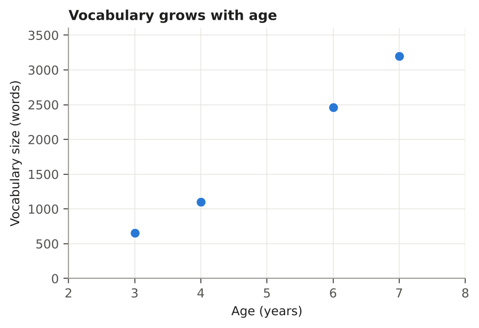
The four points in the graph rise from the lower left to the upper right: a child of 3 knows about 655 words, and a child of 7 knows about 3,195. That upward drift is what we mean by a positive relationship. With only four children, though, this is a description and not a proof. We can't say whether the pattern would hold for other children until we study inference on the slope.
Positive, negative, and no relationship
The first thing to say about a scatter plot is which way it tilts. There are three possibilities.
- Positive relationship. The points drift from the lower left to the upper right. Higher values of x tend to go with higher values of y, and lower with lower. Vocabulary and age are a positive relationship, as are years of education and earnings.
- Negative relationship. The points drift from the upper left to the lower right. Higher values of x tend to go with lower values of y. The price of a good and the quantity people buy are a negative relationship, as are the miles on a used car and its sale price.
- No relationship. The points form a shapeless cloud with no tilt. Knowing x tells you nothing about y. A person's shoe size and their exam score are an example.
| Positive | Negative | No relationship | |
|---|---|---|---|
| What the scatter plot looks like | Rises left to right | Falls left to right | Flat, shapeless cloud |
| When x is above average, y tends to be | Above average | Below average | Equally likely either way |
| Sign of the fitted line's slope and of r | Positive | Negative | About zero |
| Example | Hours studied and exam score | Price and quantity demanded | Shoe size and exam score |
Table 1.1.1. The three directions a scatter plot can show.
These words describe an association, a pattern in the data, and say nothing about whether x causes y. They also describe the average tendency, not every point: in a positive relationship, some points will still sit below the middle of the cloud. In Section 1.3 the direction becomes a number. The slope of the fitted line is positive for a positive relationship, negative for a negative one, and near zero when there's no relationship, and the correlation coefficient r (Section 1.4) always has the same sign as the slope.
What to look for
When you look at a scatter plot, describe four things: the direction (positive or negative), the form (straight, curved, or something else), the strength (how tightly the points follow the pattern), and any unusual features (outliers, clusters, or a spread that changes). A clear direction means either high values of x occur with high values of y (positive), or high values of x occur with low values of y (negative).
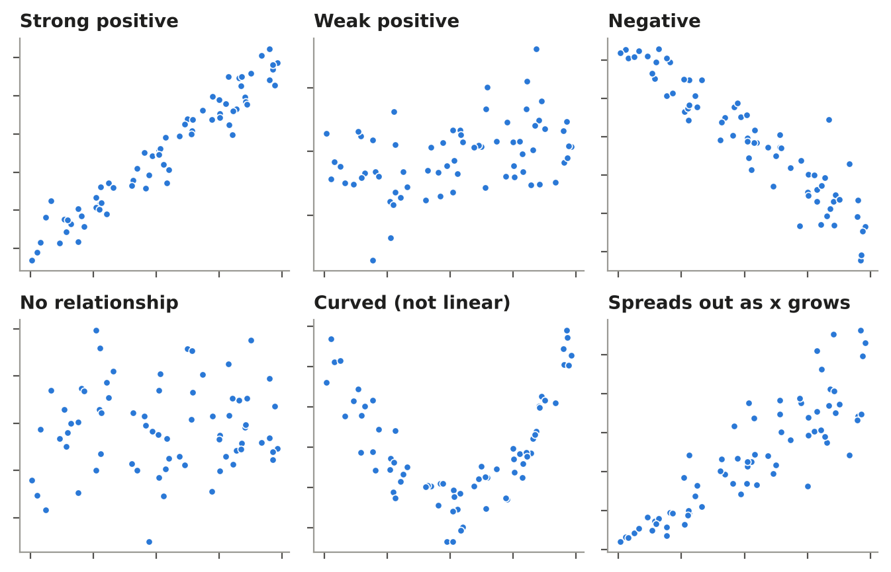
Each panel above shows a different way points can be arranged. The strong positive and negative patterns hug a straight line, the weak positive pattern slopes upward but is loose, and the no-relationship cloud has no tilt at all. The last two are different. The curved pattern bends, so a straight line would miss its shape, and the spreading pattern fans out, so the points are scattered more widely at one end than the other. A straight-line model suits the first three panels. The last two are warnings that a plain straight line won't describe the data well.
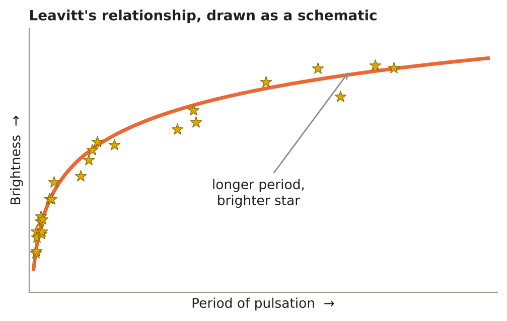
In this chapter we focus on scatter plots with a linear pattern. A linear relationship is strong if the points are close to a straight line. There's one exception worth knowing: if all the points lie exactly on a horizontal line, the fit is "perfect," but the line says there's no relationship, since y doesn't change when x does.
Use the same steps to make a scatter plot for the exercise below.
Always plot first: Anscombe's quartet
Summary statistics can hide the shape of the data. In 1973 the statistician Francis Anscombe built four small data sets with nearly identical means, variances, correlations, and best-fit lines. (We'll learn to compute the line in Section 1.3 and the correlation in Section 1.4. For now, just notice what the numbers can and can't tell you.) They look completely different when plotted.
Read the four panels in order. Data set I is an ordinary scatter around a line. Data set II is a smooth curve, so the straight line has the wrong shape even though it passes through the middle of the points. Data set III lies almost exactly on a different line, except for one point far above it, and that single point tilts the fitted line. In data set IV every x value is the same except one far to the right, and that lone point alone determines the slope. The table below puts the numbers next to the pictures. The numbers are identical, and only the graphs tell the four stories apart.
| Data set | Mean of x | Mean of y | Fitted line | r | R² | What the plot shows |
|---|---|---|---|---|---|---|
| I | 9.0 | 7.5 | ŷ = 3.00 + 0.50x | 0.816 | 0.67 | Ordinary linear scatter |
| II | 9.0 | 7.5 | ŷ = 3.00 + 0.50x | 0.816 | 0.67 | A smooth curve, not a line |
| III | 9.0 | 7.5 | ŷ = 3.00 + 0.50x | 0.816 | 0.67 | A perfect line spoiled by one outlier |
| IV | 9.0 | 7.5 | ŷ = 3.00 + 0.50x | 0.817 | 0.67 | One point far to the right creates the entire slope |
Table 1.1.2. Anscombe's four data sets have the same numerical summaries.
Anscombe's data sets show why the plot always comes first.
1.2Linear Equations
In Section 1.1 we described a relationship by eye: which way the points tilt, how tightly they cluster, and whether anything looks unusual. To describe it with numbers, we need the language of lines. Linear regression for two variables is based on a linear equation with one independent variable. The equation has the form
where β₀ and β₁ are constant numbers. The variable x is the independent variable and y is the dependent variable. Typically, you choose a value to substitute for the independent variable and then solve for the dependent variable.
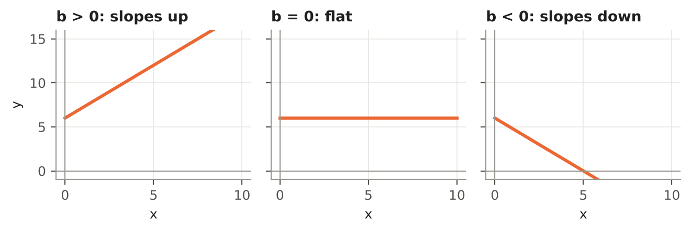
The three panels above show what the sign of β₁ does. When β₁ is positive (left), the line climbs from left to right, so larger x goes with larger y. When β₁ is zero (middle), the line is flat, so y doesn't respond to x. When β₁ is negative (right), the line falls. In every panel the line crosses the vertical axis at β₀, so the intercept slides the line up or down while the slope sets its tilt.
Slope and y-intercept
For the line y = β₀ + β₁x, the y-intercept β₀ is the value of y when x = 0, the point (0, β₀) where the line crosses the vertical axis. The slope β₁ is the change in y for each one-unit increase in x. Slope is "rise over run": how far the line goes up for each step of 1 to the right.
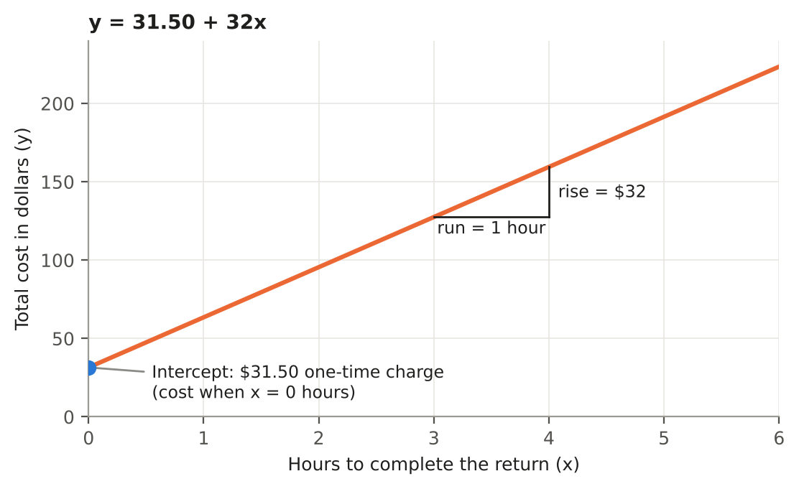
In the graph, the bill starts at $31.50 on the vertical axis, the fee when zero hours are worked (the intercept). The small triangle shows the slope: moving one hour to the right (the run) lifts the line by $32 (the rise), and 32 / 1 = 32. To use the graph for prediction, find the number of hours on the horizontal axis, go straight up to the line, and read the bill off the vertical axis.
Now try a similar problem on your own.
Lines like these are the building block for the rest of the chapter, so it is worth asking why a line is such a natural summary.
1.3The Regression Equation
Data rarely fit a straight line exactly. Usually you must be satisfied with rough predictions. When a scatter plot looks roughly linear, we want the one line that "fits" best. That line is called the line of best fit, the least-squares line, or the regression line. This section explains what "best" means, how to find the line, and how to read it.
Step one: which variable is y?
Before any computation, decide which variable you're trying to explain. That variable is the dependent variable (y, the "outcome" or "response"). The variable you use to explain it's the independent variable (x, the "predictor" or "explanatory variable"). Running the regression with the two reversed is a different question, and it gives a different line.
Our running example comes from a business setting. A firm records its advertising spending and sales (both in thousands of dollars) for 45 periods (data set ad_sales).
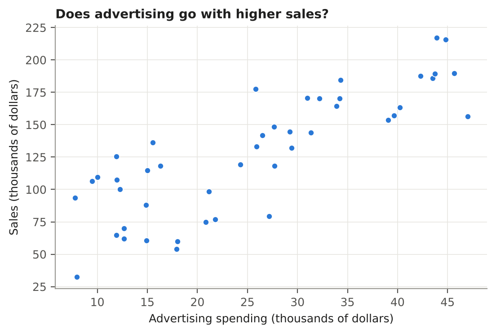
Each dot in the graph is one period. The cloud runs from the lower left to the upper right, so periods with more advertising tend to have higher sales, a positive association. The points scatter around a rough straight band instead of a curve, so a straight line is a reasonable model. They don't lie exactly on a line, which is why we need a rule for choosing the best one.
The question "How do sales depend on advertising spending?" makes sales the dependent variable. Advertising isn't being explained by anything in this model, so it's the independent variable.
What happens when you flip the variables?
The graph above shows the same 45 points on the same axes (sales vertical, advertising horizontal) and compares two lines. The orange line is the one we're building. It treats sales as y and advertising as x, and its equation is Sales-hat = 45.60 + 3.22 Ad. The green line comes from flipping the roles. We regress advertising on sales, treating advertising as the dependent variable, and get Ad-hat = −1.42 + 0.211 Sales. The green line in the graph is that equation redrawn on the sales-versus-advertising axes.
Why are the two lines different? Least squares minimizes the squared vertical distances from the points to the line, and "vertical" means in the direction of the dependent variable. For the orange line, the errors are measured in sales, straight up and down on the graph. For the green line, the errors are measured in advertising, which is side to side on this graph. Squaring different distances gives different best lines, so the two regressions are two different answers to two different questions. The orange line answers: for a given amount of advertising, what are sales on average? The green line answers: for a given level of sales, how much advertising was typically spent?
The flipped slope isn't simply 1 divided by the original slope. If it were, the flipped line would be the same line and the two regressions would agree. Instead 1 / 3.22 = 0.31, while the flipped slope is 0.211. The two slopes are linked in a different way: they multiply to R². Here 3.22 × 0.211 = 0.68 = r². Only when the points fall exactly on a line (r² = 1) do the two lines coincide. The weaker the correlation, the further apart they are. On these axes the green line is steeper than the orange one, with a slope of 1 / 0.211 = 4.73 sales units per unit of advertising, compared with 3.22.
The two lines do share some things. Both pass through the point of means (25.7, 128.2), and both have the same R² and the same r, because r treats x and y symmetrically. What changes is the interpretation and the predictions. The flipped equation says that each additional $1 thousand of sales goes with about $0.21 thousand more advertising. That isn't the effect of advertising on sales. If your question is how sales respond to advertising, use the orange line. Use the green line only when advertising is the variable you actually want to explain or predict.
Table 1.3.1. Practice identifying y and x from the wording of a question. Choose the dependent variable in each row. Exactly one question is poorly worded for a regression: neither variable clearly "depends" on the other.
One more point about choosing y and x is worth making before we move on.
Notation: parameters, estimates, and residuals
Suppose the true relationship in the population is a line plus some noise. We never see the true line. We see a sample, and from it we compute estimates. A "hat" marks an estimate, so β̂₀ and β̂₁ are the estimated intercept and slope, and ŷ (read "y-hat") is the predicted value of y from the estimated line:
The subscript i means "observation i" (the first period, the second period, and so on). The prediction ŷᵢ is almost never exactly equal to the observed yᵢ. The gap between them is the residual:
A residual isn't a "mistake" in the sense of someone blundering. It's the part of y that the line doesn't explain. Graphically, the absolute value of a residual is the vertical distance from the data point to the line. If the point lies above the line the residual is positive (the line underestimates y); if it lies below, the residual is negative (the line overestimates y). Every observation can therefore be written as a prediction plus a residual:
In the graph, the line is drawn through ten of the 45 points, and each purple segment joins a point to the line directly above or below it. Points above the line have positive residuals (actual sales were higher than the line predicted), and points below the line have negative residuals. Some segments are long, meaning the line predicted that period poorly, and some are short. A line that fit well would make all of these segments short, which is the idea behind the next section.
What makes a line "best"?
We want the line to be as close as possible to every data point, which means we want all of the residuals to be small at the same time. The natural plan is to add the residuals up. But there's a problem: some residuals are positive and some are negative, so they cancel. A terrible line that passes through the middle of a cloud can have residuals that sum to zero.
The fix is to square each residual before adding. Squaring makes every term positive, so misses in either direction count against the line, and it punishes large misses more than small ones. The total is the sum of squared residuals:
SSR is a single number that summarizes how far off a line is from the data. The "best" line is the one with the smallest SSR. This is why the method is called ordinary least squares (OLS). You can picture each squared residual as an actual square whose side is the residual. The best line is the one for which the total area of those squares is smallest.
The figure puts a square on every residual, so the area of a square is that residual squared, and the total area of the squares is SSR. A line that is too flat or too steep leaves large squares. The least-squares line has the smallest total area, SSR = 30,972, and that is what "best" means: no other line through these 45 points makes the total area of the squares smaller.
How would you find the best line? You could try slopes one at a time. For each slope, choose the intercept that makes the line pass through the middle of the data, compute SSR, and write it down. The figure below does exactly that for the advertising data. SSR falls as the slope approaches the right value, hits a minimum, and rises again.
Each point on the curve is a candidate slope (paired with its best intercept), and its height is the SSR that slope produces. Starting from a very flat slope, SSR falls as the slope increases, bottoms out at the least-squares slope of 3.22, and then climbs again as the slope gets too steep. Because the curve has a single lowest point, there's exactly one best slope. Calculus finds the bottom of the bowl directly, which gives us the formulas for the slope and intercept.
The least-squares formulas
One of the most important jobs of calculus is finding the minimum or maximum of a function, the lowest or highest value it can take. Businesses use it to find the price that maximizes profit or the production level that minimizes cost. Our situation is the same kind of problem. SSR is a function of the intercept and the slope we choose, and we want the pair that makes SSR as small as possible. Calculus solves that minimization problem exactly, and the answer is the formulas below.
Here x̄ and ȳ are the sample means. Three things are worth noticing:
- You need the means. The intercept formula plugs in x̄ and ȳ. Rearranged, it says ȳ = β̂₀ + β̂₁x̄, so the regression line always passes through the point (x̄, ȳ), the center of the data. In the advertising data that point is (25.7, 128).
- The slope is covariance over variance. The numerator measures how x and y move together. The denominator measures how spread out x is. Dividing converts "moving together" into "y change per unit of x."
- The slope can also be written with r. Writing s_x and s_y for the standard deviations of x and y, β̂₁ = r · (s_y / s_x), where r is the correlation coefficient from Section 1.4. In particular, the slope and r always have the same sign.
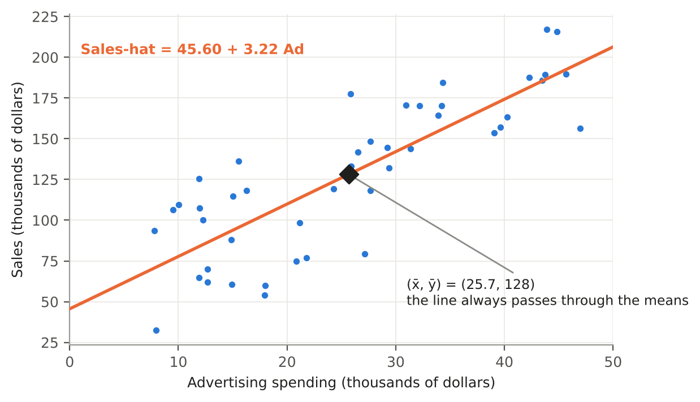
The line in the graph is the least-squares line for all 45 periods. It runs through the middle of the cloud, with points above and below it, and it passes through the diamond that marks the point of means. To read a prediction, find the advertising level on the horizontal axis, go up to the line, and read across. At $10 thousand of advertising the line predicts sales of about 77.8 thousand dollars, and at $40 thousand it predicts about 174.2 thousand.
A complete hand calculation
| x (third exam) | y (final exam) | x − x̄ | y − ȳ | (x − x̄)(y − ȳ) | (x − x̄)² |
|---|---|---|---|---|---|
| 65 | 175 | −4.18 | 14.55 | −60.8 | 17.49 |
| 67 | 133 | −2.18 | −27.45 | 59.9 | 4.76 |
| 71 | 185 | 1.82 | 24.55 | 44.6 | 3.31 |
| 71 | 163 | 1.82 | 2.55 | 4.6 | 3.31 |
| 66 | 126 | −3.18 | −34.45 | 109.6 | 10.12 |
| 75 | 198 | 5.82 | 37.55 | 218.4 | 33.85 |
| 67 | 153 | −2.18 | −7.45 | 16.3 | 4.76 |
| 70 | 163 | 0.82 | 2.55 | 2.1 | 0.67 |
| 71 | 159 | 1.82 | −1.45 | −2.6 | 3.31 |
| 69 | 151 | −0.18 | −9.45 | 1.7 | 0.03 |
| 69 | 159 | −0.18 | −1.45 | 0.3 | 0.03 |
| Sums | 394.1 | 81.64 |
Table 1.3.2. Hand-calculation table. x̄ = 69.18 and ȳ = 160.45.
The least-squares line is ŷ = −173.51 + 4.83x. As a check, the slope formula with r gives the same answer: the standard deviations are s_x = 2.857 and s_y = 20.801, and r = 0.6631, so β̂₁ = 0.6631 × 20.801 / 2.857 = 4.8274.
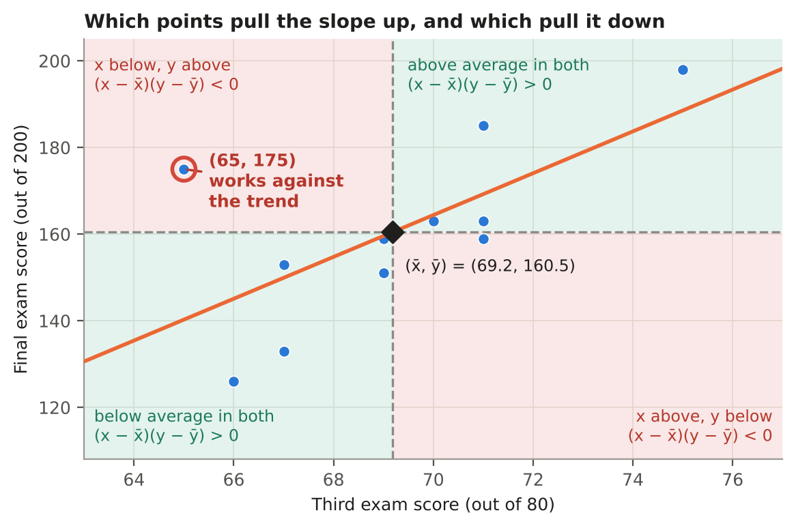
This graph shows where the slope formula's numerator, the sum of (x − x̄)(y − ȳ), comes from. The dashed lines at x̄ and ȳ cut the plot into four regions. A point in the upper-right or lower-left region (green) is above average in both variables or below average in both, so its product (x − x̄)(y − ȳ) is positive and it pulls the slope up. A point in the upper-left or lower-right region (red) has one value above average and the other below, so its product is negative and it pulls the slope down. Here 9 of the 11 students are in the green regions and 2 are in the red ones, so the positive pulls win and the slope is positive, about 4.83 final-exam points per third-exam point. The point at (65, 175) sits in the upper-left region, so it works against the trend. We return to it in the section on outliers. Because the line passes through (x̄, ȳ), it pivots on that center point, and the points set how steeply it tilts.
Running a regression in Excel
Nobody calculates least squares by hand outside of a classroom. Excel's Data Analysis tool does everything in this chapter, but it only gives correct output if you tell it which column is y and which is x, which is exactly why the previous step mattered.
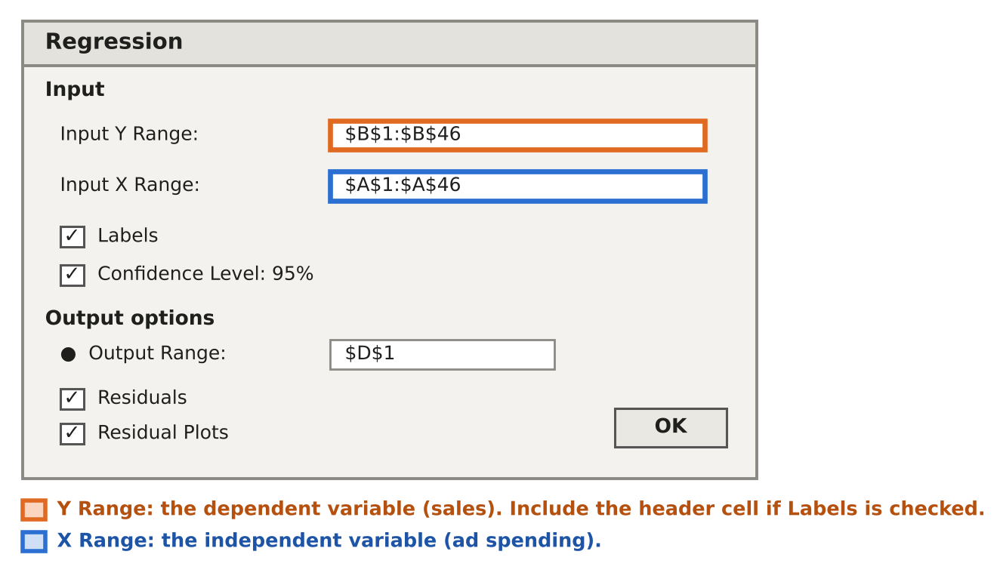
This is what the dialog looks like once it's filled in. Sales is in column B, so it goes in the Y box, and ad spending is in column A, so it goes in the X box. Both ranges start at row 1 because the header cells are included, which is why Labels is checked. If you include headers but forget to check Labels, Excel treats the header text as data and the output is wrong or an error appears.
Here is what Excel prints for the advertising data (ad_sales), with sales as the Y range and ad spending as the X range. The output comes in three blocks: Regression Statistics, ANOVA, and a table of coefficients. The slope and intercept are in the bottom table, in the column labeled Coefficients.
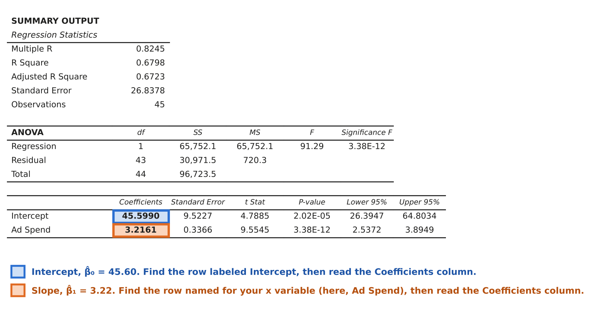
In the bottom table, the first row is labeled Intercept, and its entry in the Coefficients column, 45.5990, is β̂₀. The second row is labeled with the name of your x variable, here Ad Spend, and its entry in the Coefficients column, 3.2161, is β̂₁. Excel never writes the word "slope." The slope is always the coefficient on the row named for your x variable. If you leave the Labels box unchecked, that row is called X Variable 1 instead, which is why it helps to include your header row. Reading the two cells, the estimated regression line is
The rest of the Excel output (standard errors, t statistics, p-values, R²) is decoded in Sections 1.4 and 1.6.
Interpreting the intercept and the slope
A fitted line is only useful if you can say in plain English what it means. You should be able to write one sentence about each coefficient, in the context of the data, with correct units.
The y-intercept
The intercept β̂₀ is the predicted value of y when x = 0. In the advertising data, a firm that spends nothing on advertising is predicted to sell about $45.6 thousand. This is plausible: you can still make sales without advertising. But the intercept is often not meaningful.
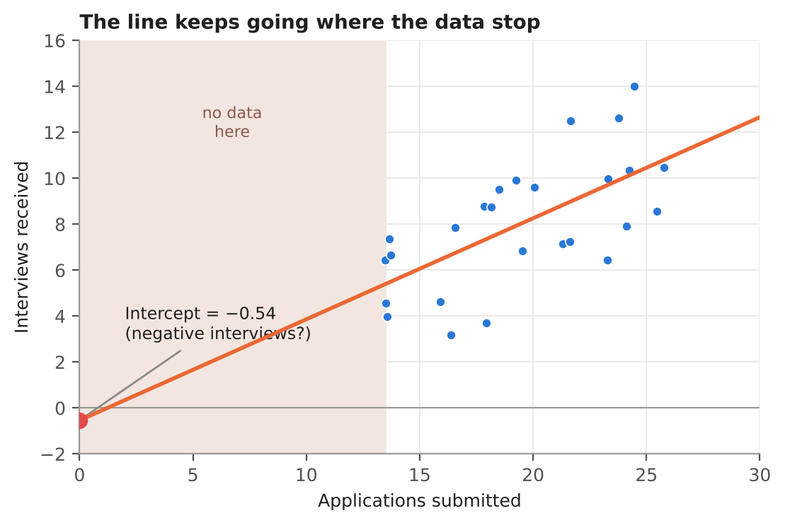
In the graph, the blue points occupy only the right part of the plot, from about 13 to 26 applications. The line is extended leftward to x = 0, where it crosses the vertical axis below zero. That crossing point is the −0.54 in the equation. The shaded region marks where there are no data. The intercept comes from extending the line across that empty region, so it's an extrapolation. It shouldn't be read as a prediction for people who submit no applications.
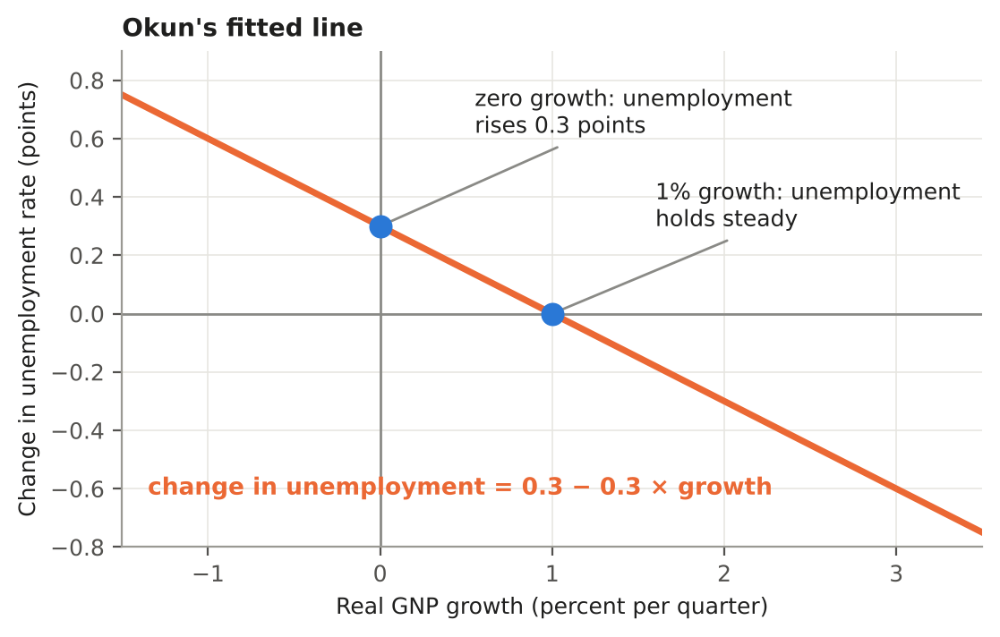
The slope
The slope β̂₁ is the predicted change in y when x increases by one unit. Always write regression slopes in decimal form (3.22) rather than as a fraction (322/100), so the change in x is always exactly 1.
Use the questions below to check that you can read a slope correctly.
The next example puts these slope interpretations to work on a classic data set.
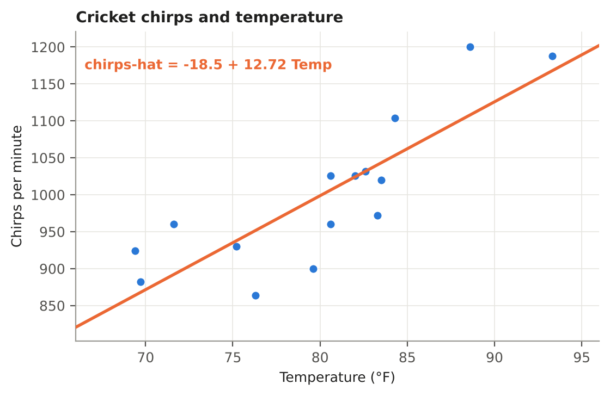
Each dot is one cricket. The points climb from the lower left (cool evenings, slow chirping) to the upper right (warm evenings, fast chirping), and the line summarizes that trend: about 12.7 more chirps per minute for each degree. The points scatter around the line, so temperature doesn't predict chirp rate exactly. Notice too that the horizontal axis runs only from about 69°F to 93°F, so the line should be trusted only in that range.
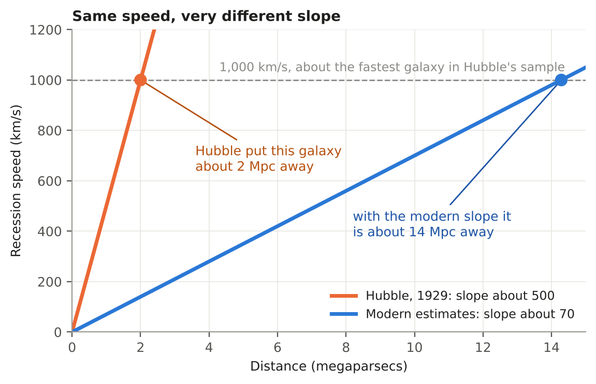
The two Hubble slopes also carry a caution about what a slope can and cannot tell us.
The exercise below lets you explore this idea with your own measurements.
1.4Correlation and R-Squared: How Strong Is the Relationship?
A fitted line always exists, but it isn't always a good summary. Look at the two panels below. Both have the same slope, but the data on the left are "noisier" and harder to explain. How do we communicate that difference in a statistic? This section introduces two numbers that do it: the correlation coefficient r and the coefficient of determination R².
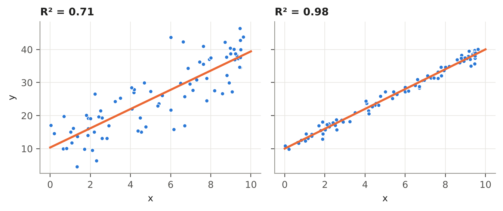
Both panels use the same true line but differ in noise. In the left panel the points scatter widely around the line, and the line explains 71% of the variation in y (R² = 0.71). In the right panel the points hug the line, and R² = 0.98. The same slope can come with very different fits. R² measures how tightly the data cluster around the line, not how steep the line is.
The correlation coefficient r
The correlation coefficient, r, developed by Karl Pearson in the early 1900s, measures the strength and direction of the linear association between x and y. It's calculated as
The formula looks formidable, but notice the numerator: it's the same quantity as the top of the slope formula. Spreadsheets compute r with a single function, =CORREL(x range, y range). For the third exam/final exam data, the sums in Section 1.3 give r = 394.1 / √(81.64 × 4326.7) = 0.6631.
What the value of r tells us
- r is always between −1 and +1.
- The sign of r is the direction. Positive r means y tends to rise as x rises; negative r means y tends to fall as x rises. The sign of r is always the same as the sign of the slope β̂₁.
- The size of r is the strength. Values near −1 or +1 mean the points lie close to a straight line; values near 0 mean there's little linear pattern.
- r = +1 or −1 means perfect correlation: all points lie exactly on a line. In real data this essentially never happens.
- r has no units. Changing from dollars to cents, or inches to centimeters, doesn't change it. (The slope does change.)
- r treats x and y symmetrically. The correlation of x with y equals the correlation of y with x, unlike the regression slope.
The gallery runs from strong negative correlation (top left, r = −0.95), through no correlation (top right, r = 0.00), to strong positive correlation (bottom right, r = 0.98). Two things stand out. The size of r controls how tight the cloud is: at |r| = 0.95 the points nearly form a line, while at |r| = 0.5 the cloud is loose. The sign of r controls only the direction of the tilt. Also notice that r = 0.20 is hard to tell apart from r = 0 by eye, so don't trust your eyes for weak correlations.
Regression toward the mean
Galton's data, the source of the name "regression" mentioned in the introduction, show how r controls the slope. If a child's adult height were exactly equal to the parents' average height, the points would lie on the dashed 45° line. Instead, the regression line is flatter, because the slope equals r times the ratio of the standard deviations, and r is less than 1. Children of unusually tall parents are tall, but on average less tall than their parents; children of unusually short parents are short, but on average taller than theirs.
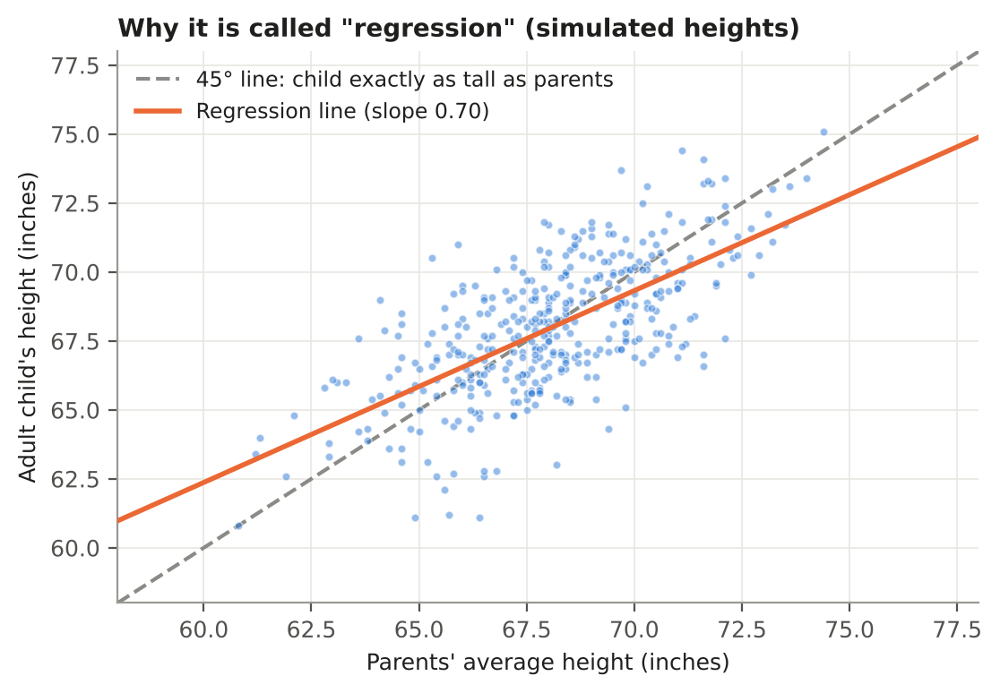
In the graph, the dashed 45° line is where a child's height would fall if children were exactly as tall as their parents. The fitted regression line is flatter, with a slope of 0.70 instead of 1. To the left of the center, where parents are short, the regression line lies above the 45° line, so children are predicted to be taller than their parents. To the right, where parents are tall, it lies below the 45° line, so children are predicted to be shorter than their parents. Children of tall parents are still taller than average, and children of short parents are still shorter than average, but each group is closer to the middle than its parents were.
This "regression toward the mean" isn't a force pulling families together. It's a statistical consequence of an imperfect correlation: whenever r is less than 1, extreme values of x are paired, on average, with less extreme values of y.
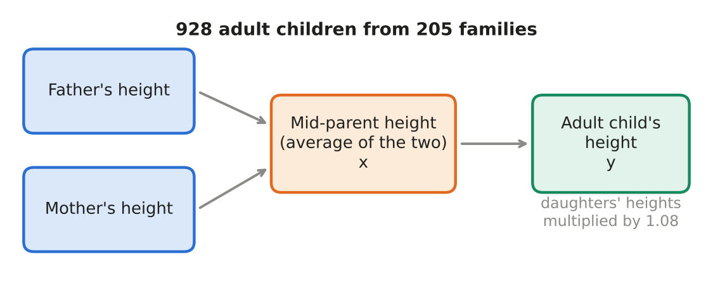
Correlation isn't causation
Suppose a data analyst for a city collects daily data on two variables over a summer: the number of ice cream cones sold, and the number of swimming accidents, a count that includes drowning deaths. The analyst makes the scatter plot in Figure 1.4.5 (data set ice_cream_swimming, simulated daily data for 120 days) and finds a clear upward pattern. Days with more ice cream sales have more swimming accidents, and the correlation is r = 0.66.
The analyst concludes that ice cream causes drowning deaths and recommends that the city ban ice cream sales at beaches and pools. The correlation is real, but the conclusion does not follow from it. A strong correlation tells us that two variables move together. It does not tell us that one of them causes the other, and the figure itself shows why this conclusion is a mistake.
Look at the colors. Each dot is a day, colored by that day's high temperature. The hot days (red) sit at the upper right, with high ice cream sales and many accidents, and the cool days (blue) sit at the lower left. Temperature is lined up with both variables. Hot days push ice cream sales up (r = 0.84 between temperature and cones sold). Hot days also push the number of people swimming up, and more swimmers means more accidents, even if each swimmer is no more at risk than before (r = 0.85 between temperature and accidents). Ice cream sales and accidents rise on the same days because both respond to the weather, not because ice cream makes swimming more dangerous.
The buttons let you check this. Pick a temperature band to look only at days with similar weather. Among cool days (50 to 65°F), r is −0.22. Among mild days (65 to 80°F), it is 0.34, and among hot days (80 to 95°F), it is only 0.09. Once we compare days with similar temperatures, the link between ice cream and accidents mostly disappears. If ice cream really caused accidents, the relationship would still show up within each band. Temperature is a lurking variable: a third variable, left out of the scatter plot, that drives both of the variables we plotted.
A lurking variable is not the only way a correlation can mislead. The relationship may be a coincidence, especially with few observations. Or the causation may run the other way, with y causing x. In every case, the scatter plot and the number r cannot settle the question by themselves.
Economists spend a large part of their careers separating correlation from causation, using randomized experiments, natural experiments, and methods such as instrumental variables, difference-in-differences, and regression discontinuity. Those methods appear in more advanced econometrics courses. For now, the rule is: say "is associated with," not "causes," unless the study design supports a causal claim.
R²: the share of variation explained
The correlation r is useful, but its square has a more direct interpretation. To see it, think about where the variation in y comes from. Take one observation in the advertising data. Its sales value is above the overall average ȳ. How much of that gap does the line account for, and how much is left over?
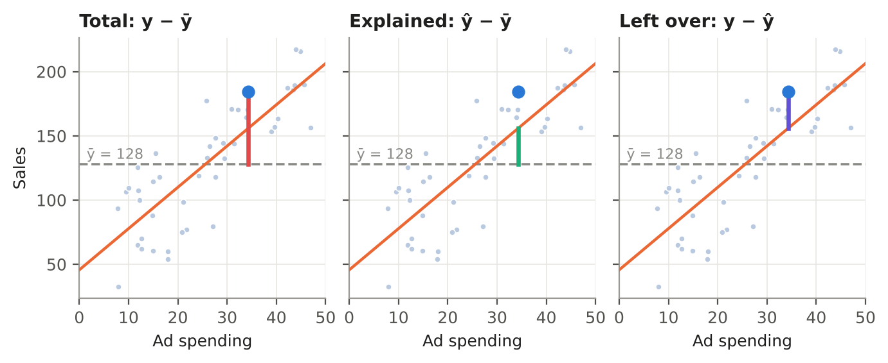
The three panels look at one observation (the large dot) and the dashed horizontal line at the mean of sales, ȳ = 128. In the left panel, the red segment is the total distance of the point above the mean, y − ȳ. The fitted line splits that distance into two pieces. The green segment in the middle panel, from the mean up to the line, is the part the line explains, ŷ − ȳ. The purple segment in the right panel, from the line up to the point, is what's left over, y − ŷ, which is the residual. The green piece plus the purple piece equal the red piece. Doing this for every observation, then squaring and adding, gives the three sums of squares in the table below.
Square each distance and add over all observations, and you get three sums of squares:
| Name | Symbol | Formula | Meaning |
|---|---|---|---|
| Total sum of squares | SST | Σ(yᵢ − ȳ)² | Total variation in y. This is what we want to explain. |
| Explained sum of squares | SSE | Σ(ŷᵢ − ȳ)² | Variation in the predicted values: what the line captures. |
| Residual sum of squares | SSR | Σ(yᵢ − ŷᵢ)² | Variation left over around the line. This is the quantity least squares minimizes. |
Table 1.4.1. The three sums of squares.
Total variation splits exactly into explained plus unexplained:
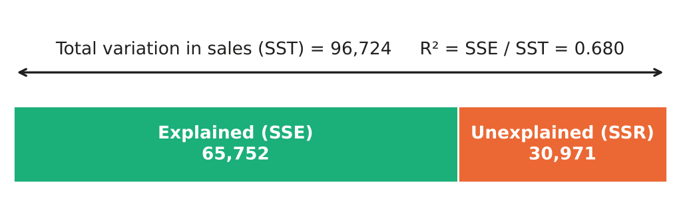
The bar condenses the whole data set into one picture. Its full length is SST, the total variation in sales (96,724). The green part is the share explained by advertising, SSE = 65,752, and the orange part is what remains, SSR = 30,971. The green share is 65,752 / 96,724 = 0.680, which is R².
The coefficient of determination, or R-squared, is the fraction of the total variation the line explains:
In simple regression (one x variable) R² is exactly the square of the correlation coefficient, R² = r². It's almost always reported as a percentage.
| SST | SSE (explained) | SSR (residual) | R² | r | |
|---|---|---|---|---|---|
| Advertising and sales (n = 45) | 96,723.5 | 65,752.1 | 30,971.5 | 0.6798 | 0.8245 |
| Third exam and final (n = 11) | 4,326.7 | 1,902.4 | 2,424.3 | 0.4397 | 0.6631 |
Table 1.4.2. Variation explained in two of our data sets. In each row, SSE + SSR = SST.
Table 1.4.2 shows how to put R² into words.
- R² is always between 0 and 1. A value of 0 means the line is no better than just predicting ȳ for everyone; 1 means every point is on the line.
- There's no universal cutoff for a "good" R². Predicting a physical measurement in a lab might demand 0.99; predicting individual human behavior with 0.20 may be a real achievement. Compare R² across models of the same outcome; all else equal, higher is better.
- A high R² only implies a high correlation, not causation.
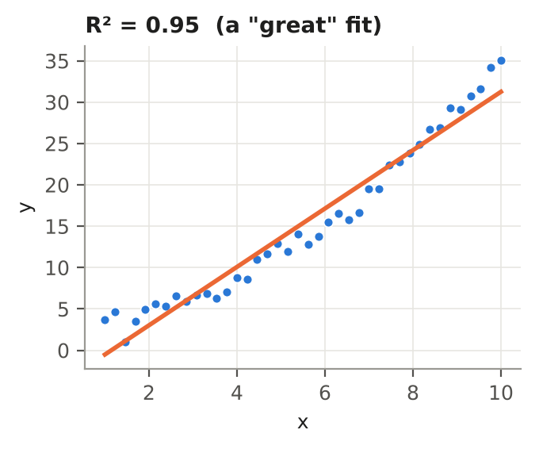
The figure shows a straight line fit to data that bend. R² = 0.95, which sounds excellent, and at first glance the line looks close to the points. Look more carefully. At the left the points are above the line, in the middle they sag below it, and at the right they climb above it again. The line is systematically too low at the ends and too high in the middle, which is the signature of a curve being forced into a straight line. A high R² says only that the line explains a lot of the variation. It does not say that a straight line is the right shape. Section 1.5 shows a systematic way to check, using the residuals.
Excel reports these values directly in its regression output.
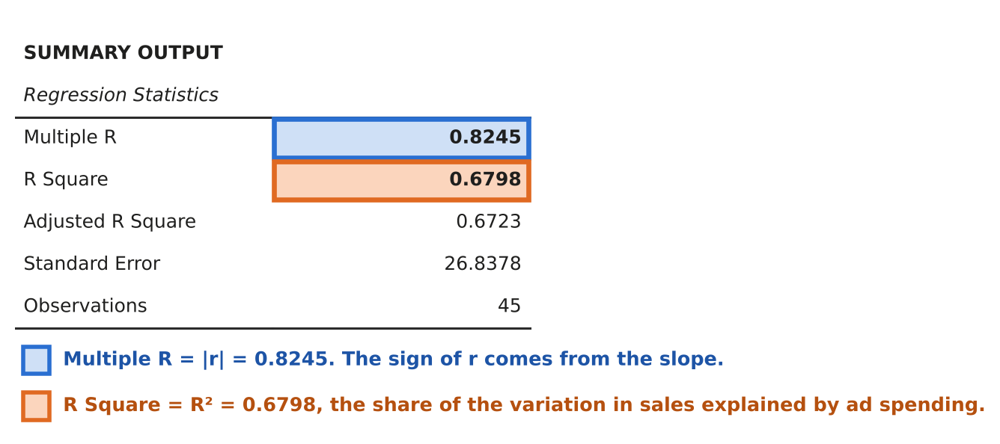
Here's the Regression Statistics block from the advertising regression. The blue cell, Multiple R, is 0.8245. Excel reports it as a positive number no matter what, so it's |r|, and you have to look at the sign of the slope to know whether r itself is positive or negative. The orange cell, R Square, is 0.6798, so about 68% of the variation in sales is explained by ad spending. Adjusted R Square is a little smaller because it penalizes extra x variables, and with just one x the two are close.
1.5Regression Assumptions and Residual Analysis
Why should we trust a fitted line? A line can be computed from any data, even nonsense. The calculation of β̂₀ and β̂₁ always "works." Whether the conclusions we draw from it are valid depends on whether the data and model satisfy certain assumptions. The regression results aren't valid if the assumptions fail, so don't forget to check them.
This is also why a high R² isn't enough. R² tells you how much of the variation the line explains, not whether the model is the right one. Anscombe's quartet (Section 1.1) makes the point: all four data sets have the same line and the same R² of 0.67, yet only one of them looks like a sensible candidate for predictions. Which would you trust?
Behind all four sits a model for how the data were generated: for each value of x, y equals a point on the population line plus a random error term:
The errors ε are unobserved, but the residuals ε̂ᵢ from the fitted line are our best stand-ins for them. That is why residuals are the main tool for checking the assumptions.
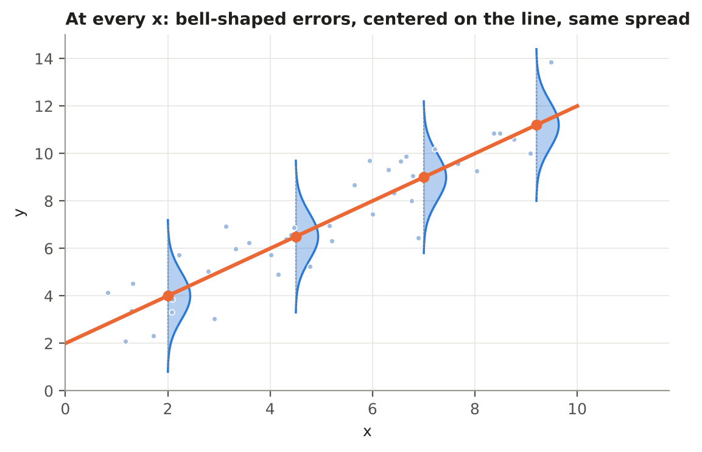
This graph pictures the model, not a particular data set. The orange line is the true population line, and at four values of x a blue bell curve stands on the line. Each bell shows how y varies around the line at that x. Three of the four assumptions can be seen: the centers of the bells sit on the line (linearity), the bells have the same width at every x (equal variance), and each bell has a normal shape (normality). The faint dots are individual observations drawn from those bells. Independence, the fourth assumption, can't be seen in a single picture. It says that each observation's draw from its bell doesn't depend on any other observation's draw.
The four assumptions in detail
Linearity
Linearity means that the coefficients, the things we estimate, enter the equation additively: y = β₀ + β₁x + ε. It does not say the relationship has to look like a straight line when graphed against the raw x. A model such as y = β₀ + β₁x² + ε is still linear in the coefficients, and it draws a curve. So the fitted curve can bend; what matters is whether the model you chose matches the shape of the data. A straight line fit to curved data (see the curved-data figure earlier in this chapter) isn't a failure of linearity in the coefficients. It's a misspecified model: the form we chose doesn't match the data, so the errors aren't centered on zero at every x. The damage is serious, because the line is systematically too high in some places and too low in others, so predictions and slope estimates are biased. The remedy stays inside linear regression: add an x² term or transform a variable.
Independence
Independence means knowing one observation's error tells you nothing about another's. Independent data scatter randomly around the line; dependent data show runs of residuals above the line, then below it, as if neighboring points were drifting together. Data collected randomly typically satisfy this assumption. But data collected over time are inherently related from one observation to the next, so this assumption is often violated in time series data: this month's sales error is usually similar to last month's. It's also violated when observations come in clusters (students in the same classroom, games in the same season). The fitted slope may still be reasonable, but the standard errors and p-values in Section 1.6 will be too optimistic. When the residuals aren't independent, the regression results aren't valid.
Normality
Normality means the error terms (and so the residuals) follow a bell-shaped distribution centered at zero. Normal residuals are balanced and symmetric: about as many large positive as large negative misses. A skewed distribution is lopsided: the line misses by much more in one direction than the other. We can still estimate a slope and an intercept when the residuals aren't normal. What we can't fully trust are the parts that are often the point of the analysis: predictions and inference (the t tests and confidence intervals in Section 1.6). Normality matters less as the sample size grows.
Equal variance
Equal variance (homoscedasticity) means the spread of the errors is the same at every x. When the spread changes, the errors are heteroscedastic. The classic pattern is a funnel: small errors when x is small and large errors when x is large, which is common for income, spending, and prices. If predictions are precise for small houses but wildly inconsistent for mansions, we wouldn't be very confident in our analysis. The fitted line can still be a sensible summary, but the usual standard errors are wrong. Econometrics has remedies, such as robust standard errors, that you'll meet in a later econometrics course.
Checking the assumptions with residuals
We check the assumptions by examining the residuals. Plot the residuals on the vertical axis against x (or against the fitted values ŷ) on the horizontal axis. For a well-fitting line, the plot should look like a random, patternless band centered on zero, with constant height and no outliers. A residual plot is simply the scatter plot with the fitted line flattened to horizontal, so each point's height shows how far it sits above or below the line.
Each panel plots residuals against x (or against observation order in the last panel). In the first, healthy panel the residuals form a shapeless band around zero. In the second, the residuals curve, positive at both ends and negative in the middle. That says the model's form is wrong: the straight line is missing a bend. In the third, the funnel, the residuals fan out as x grows, so the variance is unequal. In the fourth, the residuals stay on one side of zero for a stretch and then switch, so neighboring errors are related and independence is in doubt. Learn to recognize these four shapes, because each one points to a different fix.
To check normality, make a histogram of the residuals, or a normal Q-Q plot. The histogram should be roughly bell-shaped. In a Q-Q plot, points on a straight line mean the residuals look normal; systematic curves mean skewness or heavy tails.
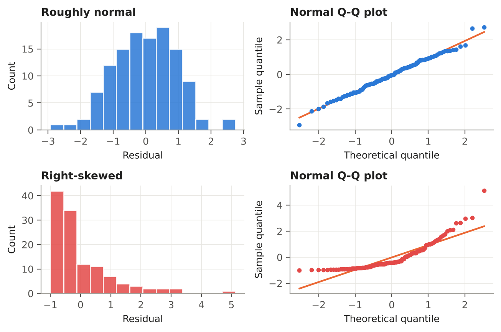
The top row shows residuals that are roughly normal. The histogram is symmetric and bell-shaped, and the points in the Q-Q plot follow the straight reference line closely. The bottom row shows right-skewed residuals. The histogram has a long tail to the right, and the Q-Q plot bends away from the line, with the upper points sitting well above it. A Q-Q plot compares the sorted residuals with what normal data would produce, so points on the line mean "looks normal."
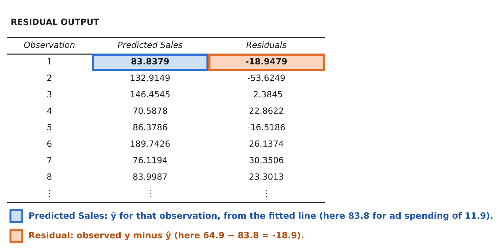
Excel puts this table below the other output when you check Residuals. Each row is one observation, in the same order as your data. In the first row, the fitted line predicts sales of about 83.8, but the actual sales were 64.9, so the residual is 64.9 − 83.8 = −18.9. A negative residual means the point sits below the line. Copy the Residuals column into a histogram or scatter plot to check the assumptions in this section.
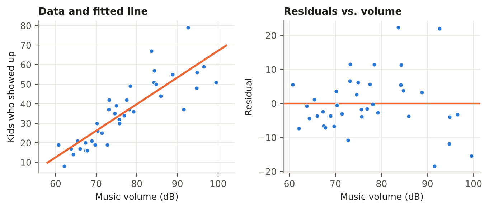
The left panel shows the data with the fitted line, and at first the line looks like a reasonable summary. The right panel, residuals against volume, shows the problem. The residuals are tightly packed at low volumes and spread out at high volumes, a funnel opening to the right. The line predicts attendance well when the music is quiet and much less well when it's loud. This violates the equal-variance assumption.
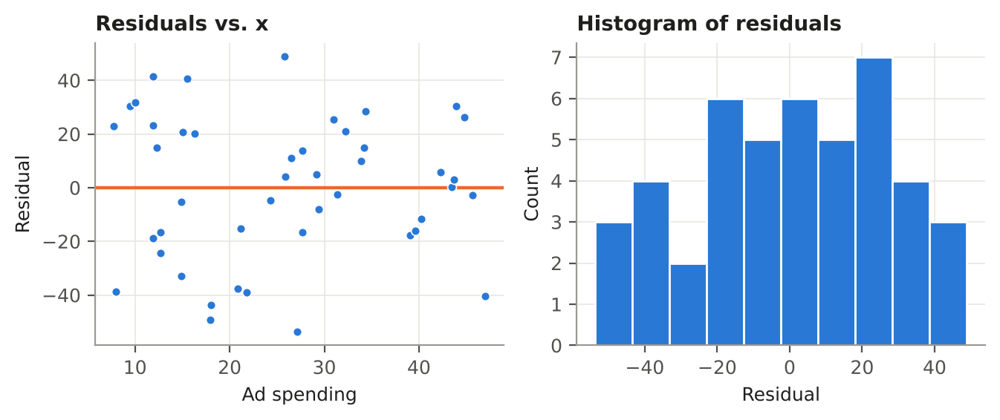
In the left panel, the residuals scatter in a patternless band around zero, with no curve and no funnel, and they're about as spread out at high ad spending as at low. In the right panel, the histogram is roughly symmetric and centered at zero. It's a bit flat on top, which is typical with only 45 observations. Together, these plots support the LINE assumptions for this regression.
Use the questions below to practice reading residual plots.
1.6Inference: Is the Slope Really Different from Zero?
So far we've described a sample. We found a slope in 45 advertising periods, or 11 students. But the real question is usually about the population: would we see a relationship among all periods, or all students, or is the pattern in our sample just luck? That is the job of statistical inference.
One sample, one line, but many possible lines
We typically draw only one sample from the population. The graph from that sample might suggest a positive relationship. Would we get the same result from a different sample? Almost certainly not exactly. Another sample would give a slightly different line, perhaps a flatter one, closer to zero. And remember what a slope of zero means: no linear relationship. Flatter lines mean weaker relationships.
In the left panel, each blue line is the least-squares line from one random sample of 20 observations. If every sample gave the same line, we would see only one line. Instead the lines fan out, tilting a little more or less steeply and sitting a little higher or lower. The right panel adds the true population line in dark. The sample lines cluster around it, some above and some below, and none is exactly right. The lines spread out most at the ends of the x range, a feature that returns when we build prediction bands.
Because of this sampling variability, the estimated slope β̂₁ is a random variable. Its value varies from sample to sample. The histogram below collects 3,000 samples from the population in the previous figure. The slopes pile up around the true slope (2.0), in a bell shape with a standard deviation of about 0.33.
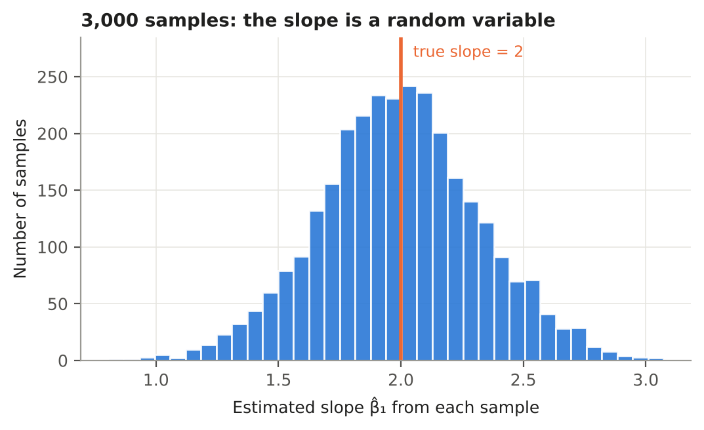
Each bar counts how many of the 3,000 random samples produced a slope in that range. The histogram is bell-shaped and centered at the true slope of 2 (the orange line), so on average the estimate is right. The spread is the important part. The standard deviation of these slopes is about 0.33, so a single sample can easily give 1.5 or 2.5. That standard deviation is the standard error of the slope, the quantity we estimate from one sample.
Even if your regression line looks clearly positive or negative, you won't know whether you've found a real relationship until you do a hypothesis test.
The hypothesis test for the slope
The idea is something we already know. We want to see if the population slope isn't zero, so the hypotheses are:
(H₀ says there's no linear relationship; Hₐ says there's one.) This is just a one-sample, two-tailed test like the ones you've done before. The evidence is a t statistic, which measures how far our estimated slope is from the hypothesized value of 0, in units of standard errors:
Dividing by the standard error is what accounts for sampling variability, and it removes the units, so the same test works on any type of data. If the sample slope is many standard errors away from zero, it's hard to blame luck. The test uses a t distribution with n − 2 degrees of freedom, because we estimated two parameters (β̂₀ and β̂₁) from the data.
Where the standard error comes from
The standard error of the slope depends on three things. First, the typical size of the residuals, measured by the standard deviation of the residuals (also called the standard error of the regression, or the root mean squared error):
We divide by n − 2 rather than n, again because the line used up two estimated parameters. Then:
- More noise (larger s) means a larger SE. Noisy data make the slope harder to pin down.
- More data (larger n) means a larger denominator, so a smaller SE. Each added observation adds to Σ(x − x̄)².
- More spread in x means a smaller SE. If every x is nearly the same, the data can't tell you how y responds to x. This is why experiments that vary x widely are so informative.
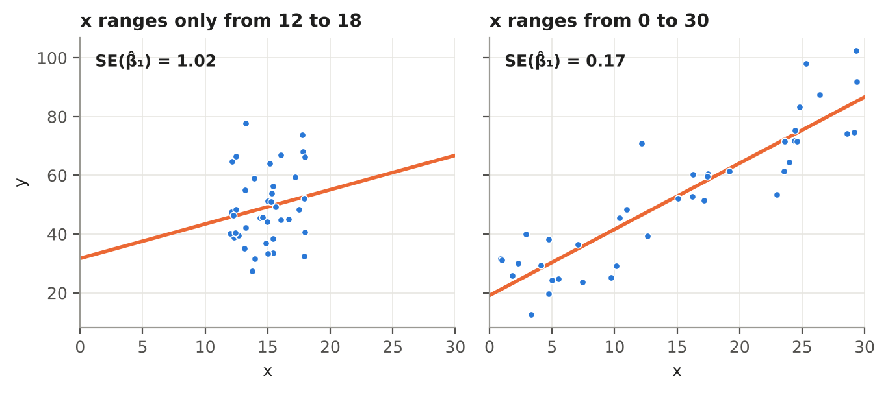
Both panels use the same true line, the same noise, and 40 observations. The only difference is the spread of x. On the left, x runs only from 12 to 18, and the line is poorly pinned down: the standard error of the slope is 1.02. On the right, x runs from 0 to 30, and the standard error drops to 0.17. When the x values are bunched together, small changes in the y values can swing the line a lot, like a seesaw with a short base. When you can choose x, spreading it out is the cheapest way to get a more precise slope.
Reading the Excel output
Nobody computes SE(β̂₁) by hand. Excel's regression output gives the standard error, t statistic, and p-value for every coefficient. Here is the full output for the advertising regression.
| Regression statistics | |
|---|---|
| Multiple R | 0.8245 |
| R Square | 0.6798 |
| Adjusted R Square | 0.6723 |
| Standard Error (s) | 26.838 |
| Observations | 45 |
| ANOVA | df | SS | MS | F | Significance F |
|---|---|---|---|---|---|
| Regression | 1 | 65,752.1 | 65,752.1 | 91.29 | 3.38E-12 |
| Residual | 43 | 30,971.5 | 720.3 | ||
| Total | 44 | 96,723.5 |
| Coefficients | Standard Error | t Stat | P-value | Lower 95% | Upper 95% | |
|---|---|---|---|---|---|---|
| Intercept | 45.599 | 9.523 | 4.788 | 2.02E-05 | 26.39 | 64.80 |
| Ad Spend | 3.2161 | 0.3366 | 9.555 | 3.38E-12 | 2.537 | 3.895 |
Table 1.6.1. Excel-style regression output for the ad_sales data. These are the three blocks Excel prints.
- Coefficients: the estimates β̂₀ and β̂₁ (the regression line).
- Standard Error: how much each estimate would typically vary from sample to sample.
- t Stat: the coefficient divided by its standard error. Check: 3.2161 / 0.3366 = 9.55.
- P-value: the probability, if the true coefficient were 0, of seeing a t statistic at least this extreme in either tail.
- Lower and Upper 95%: a 95% confidence interval for the coefficient, β̂ ± t* × SE.
- Significance F: with one x variable, this is the same test as the slope's t test (F = t²: 91.3 = 91.3). In multiple regression, Significance F tests all the slopes together (Section 2.2).
Use the p-value to test whether a coefficient is different from zero at your chosen significance level α, typically 0.01, 0.05, or 0.10. If the p-value is less than α, reject H₀. If you reject, it's common to say the coefficient is statistically significant at that level.
A test with a small sample
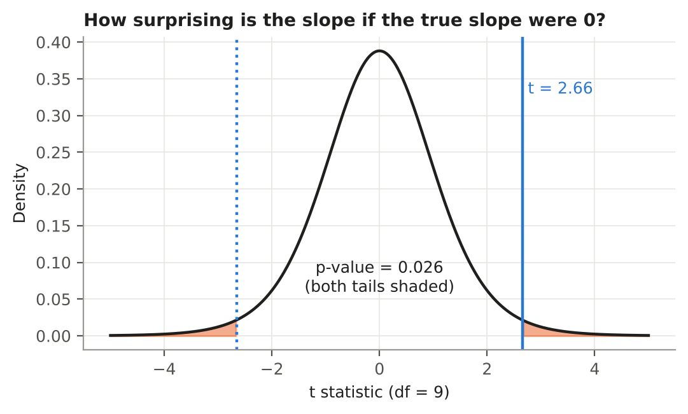
The curve shows how the t statistic would behave if the true slope were 0 (the null hypothesis), with 9 degrees of freedom. The solid blue line marks the t statistic from the third exam/final exam regression, 2.66. The dotted line marks its mirror image, −2.66, because a two-sided test counts extreme values in both directions. The shaded tail areas add up to the p-value, 0.026. A small shaded area means that a slope this far from zero would be unusual if there were no relationship, which is evidence against the null.
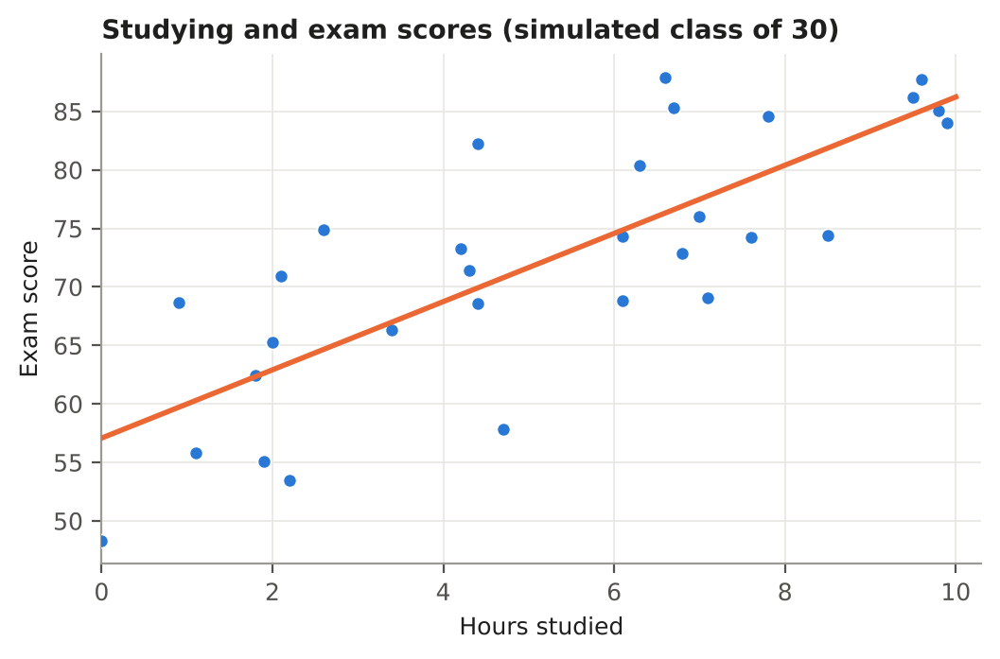
Each dot is one student. The scatter slopes upward: students who studied more tend to score higher, with a slope of 2.92 points per hour. The points spread around the line, and some students score well above or below what their study time predicts, but there's no curve or funnel, so the line is a fair summary. A student who studied 0 hours is predicted to score about 57.
Testing the correlation coefficient
The same question can be framed in terms of the correlation. The sample correlation r is an estimate of the unknown population correlation coefficient, ρ (the Greek letter rho). We test
The test statistic is
with n − 2 degrees of freedom. In simple regression, this gives exactly the same t statistic and p-value as the test on the slope. For the exam data: t = 0.6631 × √9 / √(1 − 0.4397) = 2.66, the same as before. The conclusion, in words:
- If p < α (reject H₀): There's sufficient evidence of a significant linear relationship between x and y, because the correlation coefficient is significantly different from zero. We can use the regression line to model the relationship in the population.
- If p ≥ α (don't reject H₀): There's insufficient evidence of a significant linear relationship. We can't use the line to model the relationship.
The critical-value method
Before software, people compared r to a table of critical values. If r isn't between the negative and positive critical values for the right degrees of freedom (df = n − 2), the correlation is significant at the 5% level. The table below gives the critical values.
| df = n − 2 | Critical value (±) | df = n − 2 | Critical value (±) |
|---|---|---|---|
| 1 | 0.997 | 16 | 0.468 |
| 2 | 0.950 | 17 | 0.456 |
| 3 | 0.878 | 18 | 0.444 |
| 4 | 0.811 | 19 | 0.433 |
| 5 | 0.754 | 20 | 0.423 |
| 6 | 0.707 | 21 | 0.413 |
| 7 | 0.666 | 22 | 0.404 |
| 8 | 0.632 | 23 | 0.396 |
| 9 | 0.602 | 24 | 0.388 |
| 10 | 0.576 | 25 | 0.381 |
| 11 | 0.553 | 26 | 0.374 |
| 12 | 0.532 | 27 | 0.367 |
| 13 | 0.514 | 28 | 0.361 |
| 14 | 0.497 | 29 | 0.355 |
| 15 | 0.482 | 30 | 0.349 |
Table 1.6.2. 95% critical values of the sample correlation coefficient (α = 0.05, two-tailed).
To use the table, find df = n − 2 and compare |r| with the critical value. If |r| is larger, the correlation is significant at the 5% level, and if the scatter plot is also linear, the line may be used for prediction within the range of the data. Table 1.6.3 applies this rule to seven cases.
| r | n | df | Critical value | Decision |
|---|---|---|---|---|
| 0.801 | 10 | 8 | 0.632 | Significant |
| −0.624 | 14 | 12 | 0.532 | Significant |
| 0.776 | 6 | 4 | 0.811 | Not significant |
| 0.708 | 9 | 7 | 0.666 | Significant |
| −0.567 | 19 | 17 | 0.456 | Significant |
| 0.134 | 14 | 12 | 0.532 | Not significant |
| 0.000 | 5 | 3 | 0.878 | Not significant |
Table 1.6.3. Worked cases. The case r = 0.776 with n = 6 is a useful reminder: a fairly large r from a small sample can still be consistent with no relationship.
Notice that the decision depends on both r and n. The reliability of a linear model depends on the strength of the sample correlation and the number of observations. A correlation of 0.78 from six points isn't convincing, but a correlation of 0.30 from 200 points can be. Try the rule yourself on the cases below.
Assumptions behind the test
The t tests and confidence intervals rest on the LINE assumptions from Section 1.5: a correctly specified linear model, independent errors, normally distributed errors, and equal variance at every x, together with data from a well-designed random sample or randomized experiment. Violating them doesn't make the arithmetic fail, but it makes p-values and intervals unreliable.
Passing the test also says nothing about how large an effect is, and the next point matters whenever you read a p-value.
1.7Reading a Regression Table
In published research, regression results are summarized in tables. A good regression table should give you all the information you need without consulting the text of the article. Once you know the layout, you can read almost any one.
Anatomy of a published table
The table below reports four simple regressions of an NBA player's annual salary on his points per game, estimated on all players and then separately by position. (The data set is nba_salary, simulated for teaching; these aren't real salaries.)
| (1) All players | (2) Guards | (3) Forwards | (4) Centers | |
|---|---|---|---|---|
| Points per game | 0.730*** | 0.775*** | 0.744*** | 0.544*** |
| (0.047) | (0.075) | (0.075) | (0.104) | |
| Constant | 1.750*** | 1.640 | 1.242 | 3.563*** |
| (0.622) | (1.013) | (1.020) | (1.263) | |
| Observations | 180 | 75 | 63 | 42 |
| R² | 0.57 | 0.59 | 0.62 | 0.40 |
Table 1.7.1. Dependent variable: annual salary (millions of dollars). Standard errors in parentheses. *** p < 0.01, ** p < 0.05, * p < 0.10. Simulated data.
- Title or notes name the dependent variable. Here, salary in millions of dollars.
- Independent variables are listed down the first column. Here there's one: points per game. The Constant row is the intercept.
- Estimated slopes appear in the body of the table, one column per regression. Each column is a separate model.
- Standard errors (or sometimes p-values) are in parentheses under each coefficient. You can calculate the t statistic yourself: for column (1), t = 0.730 / 0.047 = 15.5.
- Stars indicate significance. More stars mean stronger evidence against H₀: β = 0. The key at the bottom tells you the thresholds. Conventions vary, so read the key.
- Summary rows report the number of observations and R², and sometimes other statistics.
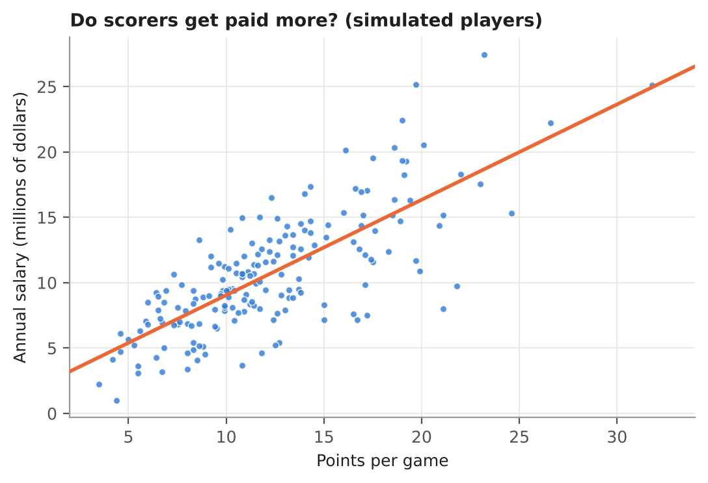
Each dot is a simulated player, with points per game on the horizontal axis and salary on the vertical axis. Higher scorers earn more on average, which is why the line slopes upward. Now look at the vertical spread. Among low scorers, salaries cluster tightly, while among high scorers they range widely. That widening is a warning that the equal-variance assumption is questionable, which matters for the standard errors in the regression table.
1.8Prediction
Once you have a line you trust, you've built a tool. You can answer "what if?" questions about values of x you never observed. To predict y for a given x, substitute that x into the regression equation. The result ŷ is our best single guess for y, and it estimates the average y among all cases with that x.
Interpolation and extrapolation
The line was fit to data inside the relevant range, so inside that range we have evidence that the linear pattern holds. Outside it, we have no evidence at all. The relationship might curve, level off, or hit a physical limit, and the line will keep going regardless.
The shaded region marks the third-exam scores actually observed, 65 to 75. Inside it, the line tracks the data. Extending the line to a third-exam score of 90 gives a predicted final-exam score of 261, but the maximum possible score is 200 (the dashed red line). The line crosses 200 long before it reaches x = 90. This is extrapolation: using the line far outside the data, where we have no evidence that the straight-line pattern continues. Even when such a prediction isn't impossible, it's far less reliable than one inside the data range.
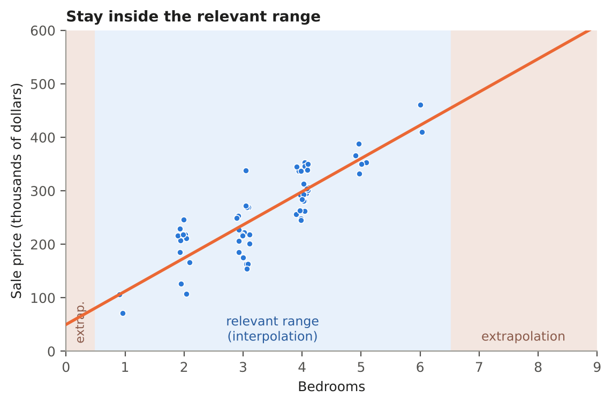
The blue region covers the bedroom counts in the data, 1 to 6, so predictions there are interpolations. The line keeps going into the shaded regions on each side. At 0 bedrooms it gives a price of about 50 thousand dollars, and at 9 bedrooms it gives about 609 thousand, far beyond any house we observed. The data say nothing about whether a nine-bedroom house follows the same pattern, and a house that large is a different kind of property.
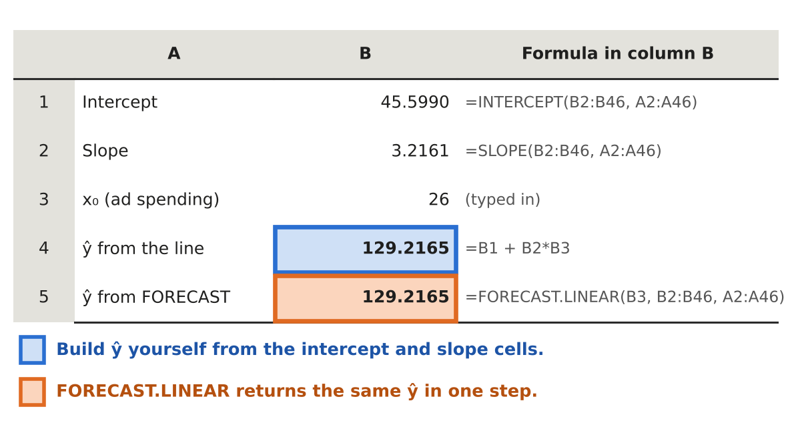
In this worksheet, cells B1 and B2 hold the intercept and slope from the SLOPE and INTERCEPT functions, and B3 holds the x value we want a prediction for. Row 4 builds ŷ by hand from those cells, and row 5 gets the same number in one step with FORECAST.LINEAR. Because both rows refer to the unrounded coefficients, they agree exactly.
A prediction isn't a certainty
A predicted value is a single number, but reality scatters around it. Two different questions require two different intervals:
- What's the average y for all cases with x = x₀? This is the mean response. Its uncertainty comes only from not knowing the true line exactly. The interval for it's a confidence interval.
- What will y be for one new case with x = x₀? This is an individual response. It carries the same uncertainty about the line plus the case's own random scatter around the line. The interval is a prediction interval, and it's always wider.
Confidence interval for the mean response at x₀:
Prediction interval for one new case at x₀ (note the extra 1 under the square root):
Both intervals are narrowest at x̄ and widen as x₀ moves away from the center of the data, which is one more reason to avoid extrapolation.
Both bands are centered on the regression line, but they answer different questions. The narrow orange band is the confidence band: we're 95% confident that the average sales at each advertising level lie inside it. It's narrow because 45 observations pin down an average well. The wide blue band is the prediction band, where about 95% of individual new observations should fall. It's wider because an individual period has its own random noise on top of the uncertainty about the line. Most of the data points fall inside the blue band, as expected, while many fall outside the orange band. That isn't a problem, since the orange band is about the average and not about individual points. Both bands are narrowest near the mean of x and flare out toward the ends, because the line is least certain far from the center of the data.
1.9Outliers and Influential Points
In some data sets there are observed points that are far from the least-squares line. Such points have large residuals and are called outliers. A separate worry is points that are far from the other observations in the horizontal direction. These can have an outsized effect on the slope, and are called influential points. Both deserve close attention.
Identifying outliers: the 2s rule
We can guess at outliers by looking at a graph, but we would like a guideline for how far from the line a point must be. As a rough rule of thumb, flag any point whose residual is more than two standard deviations of the residuals above or below the line, that is, |ε̂ᵢ| > 2s. The standard deviation used is the s defined in Section 1.6, computed from SSR with n − 2 in the denominator. Graphically, this means drawing a band of ±2s around the regression line.
For the third_final_exam data, s = 16.41, so 2s = 32.8. The table lists each student's predicted value and residual.
| x (third exam) | y (final exam) | ŷ | y − ŷ | |y − ŷ| > 32.8? |
|---|---|---|---|---|
| 65 | 175 | 140.3 | 34.7 | Flagged |
| 67 | 133 | 149.9 | −16.9 | |
| 71 | 185 | 169.2 | 15.8 | |
| 71 | 163 | 169.2 | −6.2 | |
| 66 | 126 | 145.1 | −19.1 | |
| 75 | 198 | 188.5 | 9.5 | |
| 67 | 153 | 149.9 | 3.1 | |
| 70 | 163 | 164.4 | −1.4 | |
| 71 | 159 | 169.2 | −10.2 | |
| 69 | 151 | 159.6 | −8.6 | |
| 69 | 159 | 159.6 | −0.6 |
Table 1.9.1. Residuals for the exam data. Only the student with x = 65 and y = 175 has a residual (about 35) beyond 2s.
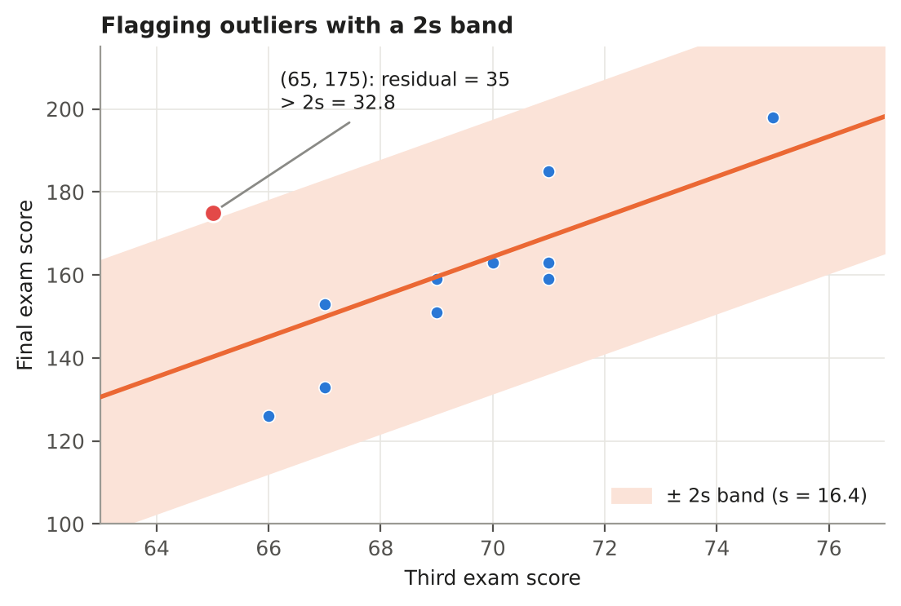
The shaded band extends two standard errors of the regression, 2s = 32.8, above and below the line. A point outside the band has a residual larger than 2s and is flagged as a potential outlier. Only one point qualifies, at (65, 175). The line predicts about 140 for a third-exam score of 65, but the student scored 175, a residual of 35. Being flagged means the point deserves a closer look. It doesn't mean it should be deleted.
What should you do with an outlier?
Examine the point closely. Sometimes an outlier is the result of erroneous data (a typo, a mismeasurement) and should be fixed or removed. Other times it holds valuable information about the population and should stay. The key is to figure out what caused it. It's not acceptable to delete a point simply because it makes the fit look worse.
To see how much one point matters, refit without it. For the exam data, deleting (65, 175) gives a new line, ŷ = −355.19 + 7.39x, with r = 0.9121, compared with r = 0.6631 before. The correlation rises from moderate to strong, and the slope jumps from 4.83 to 7.39. The new prediction for a student who scored 73 is 184.1, compared with 178.9 from the original line.
The dashed gray line is the fit using all 11 points, with slope 4.83. The solid orange line is the refit after a point is moved or added. The point at (65, 175) was pulling the left end of the gray line upward and flattening it: refitting without it raises the slope by about half, to 7.39, and lifts r from 0.66 to 0.91. That is what it means for a point to be influential: the result changes noticeably depending on whether the point is in the data.
Influential points and leverage
A point can matter in two different ways. An outlier in y (far above or below the line) mainly shifts the line up or down and inflates the residual spread. A point that is extreme in x has leverage: it can pull the line toward itself. A point with high leverage that also lies off the trend of the other points is influential, and it can change the slope dramatically. To check whether a point is influential, remove it and see whether the slope changes significantly.
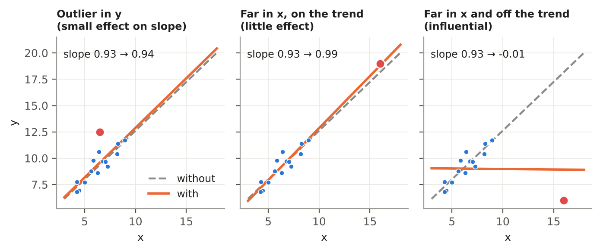
In all three panels, the same fourteen points form a tight line with slope 0.93, and one red point is added. In the left panel, the red point is far from the line vertically but sits at a typical x. It nudges the slope only slightly, from 0.93 to 0.94. In the middle panel, the red point is far out in x but right on the trend, and it barely changes the line (0.93 to 0.99). In the right panel, the red point is far out in x and well off the trend, and it drags the slope from 0.93 to −0.01, flattening the line completely. A point far from the other x values has high leverage. High leverage combined with a point off the trend is what makes a point influential, more than a large distance in y alone.
When the pattern is wrong: the CPI example
The Consumer Price Index (CPI) measures the average change over time in the prices paid by urban consumers, and is the standard measure of inflation. The data set cpi gives the CPI for selected years from 1915 to 2023; the first 14 rows run through 1999. Fitting a line to the 14 years through 1999 gives ŷ = −3204 + 1.662x with r = 0.8694 and s = 25.4. The correlation is significant, no point lies beyond 2s, and the line predicts a 1990 CPI of about 103.9.
Everything above looks fine, until you look at the picture. The points don't follow a straight line. They curve upward, and the residuals form a U-shape (positive at the start, negative in the middle, positive at the end). Even though r is high and significant, a curve would be a much more appropriate model than a line. Adding the three recent years makes it worse: r rises to 0.907 because the points are further spread out in x, but the line now misses the curve more badly.
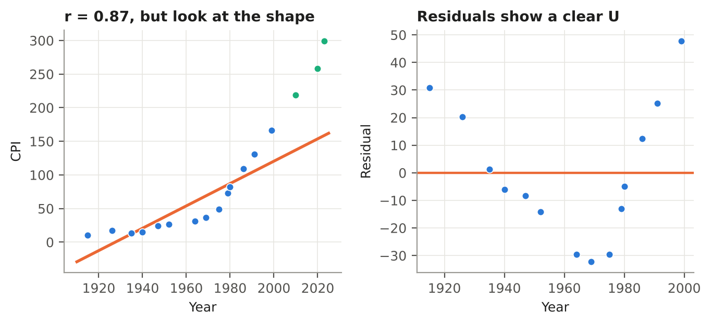
The left panel plots the consumer price index (CPI) against year. The blue points through 1999 are the data used to fit the line, and the green points are three later years. The correlation is high (r = 0.87), but the points aren't straight. They sag below the line in the middle, bend upward at the end, and the green points shoot far above the line. The right panel confirms it with the residuals, which form a U: positive, then negative, then positive again. A high r doesn't mean a line is the right model. Prices tend to grow by a percentage each year, not by a fixed amount, so the data curve upward.
Chapter Review
Summary
- Bivariate data have two variables per observation. Always plot first (a scatter plot) and describe direction, form, strength, and unusual features.
- Decide which variable is dependent (y) and which is independent (x) from the question. Reversing them gives a different line.
- The least-squares line ŷ = β̂₀ + β̂₁x minimizes the sum of squared residuals (SSR). It always passes through (x̄, ȳ). The slope is Cov(x, y)/Var(x) = r·s_y/s_x.
- The slope is the average change in y per one-unit increase in x. The intercept is the predicted y when x = 0, which is often not meaningful.
- The correlation r (−1 to +1) measures the strength and direction of linear association. R² = r² is the share of the variation in y explained by x. A high R² doesn't make a model valid, and correlation isn't causation.
- The LINE assumptions: Linearity, Independence, Normality, Equal variance. Linearity is about the model's shape; the other three are about the errors. Check them with residual plots, histograms, and Q-Q plots.
- Inference: test H₀: β₁ = 0 with t = β̂₁/SE(β̂₁) and n − 2 degrees of freedom. A small p-value is evidence of a relationship. The test of ρ = 0 gives the same result in simple regression.
- Predict only inside the relevant range (interpolation). Extrapolation is unreliable. Predicting one case is more uncertain than predicting an average.
- Outliers have large residuals (rule of thumb: |ε̂| > 2s). Influential points are extreme in x and can change the slope a lot. Investigate, document, and report with and without.
Formula review
| Quantity | Formula |
|---|---|
| Regression line | ŷ = β̂₀ + β̂₁x |
| Residual | ε̂ᵢ = yᵢ − ŷᵢ |
| Sum of squared residuals | SSR = Σ(yᵢ − ŷᵢ)² |
| Slope | β̂₁ = Σ(xᵢ − x̄)(yᵢ − ȳ) / Σ(xᵢ − x̄)² = r · s_y / s_x |
| Intercept | β̂₀ = ȳ − β̂₁x̄ |
| Correlation | r = Σ(xᵢ − x̄)(yᵢ − ȳ) / √[Σ(xᵢ − x̄)² Σ(yᵢ − ȳ)²] |
| Total and explained sums of squares | SST = Σ(yᵢ − ȳ)², SSE = Σ(ŷᵢ − ȳ)², SST = SSE + SSR |
| Coefficient of determination | R² = SSE/SST = 1 − SSR/SST = r² |
| Standard deviation of residuals | s = √[SSR / (n − 2)] |
| Standard error of the slope | SE(β̂₁) = s / √Σ(xᵢ − x̄)² |
| t statistic for the slope | t = β̂₁ / SE(β̂₁), df = n − 2 |
| t statistic from r | t = r √(n − 2) / √(1 − r²), df = n − 2 |
| Confidence interval for the slope | β̂₁ ± t* · SE(β̂₁) |
| Outlier rule of thumb | |yᵢ − ŷᵢ| > 2s |
Excel cheat sheet
| To get… | Use… |
|---|---|
| Scatter plot | Insert → Scatter; right-click a point → Add Trendline |
| Slope, intercept | =SLOPE(y, x), =INTERCEPT(y, x) |
| Correlation r, R² | =CORREL(x, y), =RSQ(y, x) |
| Standard error of the regression (s) | =STEYX(y, x) |
| Prediction ŷ at x₀ | =FORECAST.LINEAR(x₀, y, x) |
| Everything at once (coefficients, SEs, t, p, CIs, R²) | Data → Data Analysis → Regression (check Residuals) |
| Residual plot, histogram | Check Residual Plots in the dialog; Insert → Histogram on the Residuals column |
Key terms
| Term | Meaning |
|---|---|
| Bivariate data | Two measured variables for each individual. |
| Dependent variable (y) | The outcome being explained or predicted. |
| Independent variable (x) | The variable used to explain or predict y. |
| Scatter plot | A graph of paired (x, y) values. |
| Residual (ε̂) | Observed y minus predicted ŷ; the vertical distance from a point to the line. |
| Ordinary least squares | Choosing the line with the smallest sum of squared residuals. |
| Slope (β̂₁) | Predicted change in y per one-unit increase in x. |
| Intercept (β̂₀) | Predicted y when x = 0. |
| Correlation (r) | Unit-free measure of linear association, from −1 to 1. |
| R² | Fraction of the variation in y explained by the regression. |
| LINE | The four regression assumptions: Linearity, Independence, Normality, Equal variance. |
| Heteroscedasticity | Error variance that changes with x. |
| Standard error | Estimated standard deviation of an estimate across samples. |
| t statistic; p-value | Estimate divided by its SE; the probability of a result at least as extreme if H₀ were true. |
| Relevant range | The span from the smallest to the largest observed x. |
| Interpolation / extrapolation | Predicting inside / outside the relevant range. |
| Outlier | A point with an unusually large residual. |
| Leverage; influential point | A point extreme in x; a high-leverage point that changes the fitted line a lot. |
Practice Problems
Use Excel for the computations unless a problem says otherwise. Answers to every problem, and to the Try It exercises, follow.
- Which is y? In each question, name the dependent and independent variable. (a) How do house prices depend on square footage? (b) What's the effect of rainfall on crop yield? (c) How does a person's GPA affect their starting salary? (d) What's the relationship between shoe size and vocabulary?
- Interpretation. A study of sleep and reaction time gives Reaction-hat = 410 − 12 Sleep, where reaction time is in milliseconds and sleep is hours per night (the data cover 4 to 9 hours). Interpret the slope and the intercept. Does the intercept make sense?
- Residual. A fitted line is ŷ = 12 + 3x. For the observation (x, y) = (4, 29), find the residual. Does the line over- or underestimate y?
- SCUBA. The maximum dive times for various depths (data set scuba) are (50 ft, 80 min), (60, 55), (70, 45), (80, 35), (90, 25), (100, 22). Plot the data, find the least-squares line, and predict the maximum dive time at 110 feet. Is this prediction trustworthy? Why or why not?
- Amelia's jump shot. Use the jump_shot data from Try It 1.3: (5, 15), (7, 22), (9, 28), (10, 31), (11, 33), (12, 36). Find the line, r, and R². Interpret the slope. What would you predict for 8 hours of practice? For 30 hours?
- Music and math. The line of best fit relating weekly hours practicing an instrument (x) to a math test score (y) is ŷ = 72.5 + 2.8x, based on data with x between 1 and 10. Predict the score for five hours per week.
- R². A regression has r = −0.70. Find R² and interpret it. What's the sign of the slope?
- Inference. A regression of y on x with n = 27 gives a slope of 0.52 and a standard error of 0.21. (a) Compute t and its degrees of freedom. (b) The p-value is about 0.020. State the conclusion at α = 0.05 and at α = 0.01. (c) Find a 95% confidence interval for the slope (t* = 2.060).
- Critical values. For each, decide if r is significant at the 5% level (use the table in Section 1.6):
(a) r = 0.6501, n = 12
(b) r = 0.5204, n = 9
(c) r = −0.7204, n = 8
(d) r = 0, n = 100 - Assumptions. Name the assumption or problem in each case. (a) The residual plot is U-shaped. (b) The residuals fan out as x increases. (c) Residuals from monthly data come in long runs above and then below zero. (d) The histogram of the residuals is strongly skewed right.
- Outlier rule. A regression has s = 8. One observation has a residual of −21. Is it a potential outlier by the 2s rule? What should you do next?
- Outliers by hand. The data (data set outlier_practice) are (1, 5), (2, 7), (2, 6), (3, 9), (4, 12), (4, 13), (5, 18), (6, 19), (7, 12), (7, 21). Find the line and s. Identify the outlier by the 2s rule, remove it, refit, and find ŷ when x = 10.
- Per capita income. Year and per capita income (PCINC), data set pcinc: 1870 → 340, 1880 → 499, 1890 → 592, 1900 → 757, 1910 → 927, 1920 → 1050, 1930 → 1170, 1940 → 1364, 1950 → 1836, 1960 → 2132. (a) Identify the variables. (b) Plot. (c) Find the line and r. (d) Is r significant? (e) Find and interpret R². (f) Interpret the slope. (g) Estimate PCINC for 1900 and for 2000. (h) Are there outliers? (i) Does the residual pattern suggest a line is the right model?
- Ice cream cones. A shop owner recorded noon temperature (°F) and cones sold on nine days (data set ice_cream_cones): (70, 105), (85, 240), (65, 49), (72, 147), (80, 231), (61, 38), (75, 193), (78, 196), (68, 89). Run the regression, interpret the slope, and say whether the intercept is meaningful. Inspect the residuals.
- Add the new years. The cpi data set includes 2010 (219.2), 2020 (258.0), and 2023 (299.2). Refit the CPI line using all 17 years. Does r increase? Is the fit actually better? Look at the residuals.
- Conceptual. (a) A model has R² = 0.95 but its residual plot is a clear U. Should you trust it? (b) Why does a wider range of x values give a smaller standard error for the slope? (c) Two researchers regress A on B and B on A with the same data. Will they get the same slope? The same r?
Answers
Try It exercises
- 1.1. The scatter plot rises from lower left to upper right, so more practice goes with more points. (r = 0.998.)
- 1.2. y = 50 + 20x.
- 1.3. Independent variable: hours of work per visit. Dependent variable: dollars earned per visit. Intercept 25: the $25 visit charge, earned before any work. Slope 20: Ethan earns an additional $20 for each hour of work.
- 1.4. Answers vary with the class data.
- 1.5.
(a) |0.6501| > 0.576, significant, may be used for prediction.
(b) 0.5204 < 0.666, not significant.
(c) |−0.7204| > 0.707, significant.
(d) r = 0 is between the critical values for any n, not significant.
Practice problems
- (a) y = house price, x = square footage. (b) y = crop yield, x = rainfall. (c) y = starting salary, x = GPA. (d) Not well worded for regression; neither clearly depends on the other (and age probably drives both).
- Slope: each additional hour of sleep is associated with 12 ms shorter reaction time, on average (within 4 to 9 hours). Intercept: at 0 hours of sleep the line predicts 410 ms, but 0 hours is far outside the data, so the intercept has no meaningful interpretation.
- ŷ = 12 + 3(4) = 24. Residual = 29 − 24 = 5. Positive, so the line underestimates y.
- The line is ŷ = 127.24 − 1.114x, with r = −0.963. At 110 ft, ŷ = 4.67 minutes. But 110 is outside the relevant range of 50 to 100 feet, and the data are visibly curved (the drop in time per 10 ft shrinks at greater depths), so this linear extrapolation shouldn't be trusted.
- ŷ = 0.76 + 2.97x, r = 0.998, R² = 0.995. Each additional weekly hour of practice is associated with about 3.0 more points, on average. At 8 hours: 24.5 points (interpolation, inside 5 to 12). At 30 hours: 90 points, which is extrapolation and absurd for a single game.
- ŷ = 72.5 + 2.8(5) = 86.5.
- R² = 0.49. About 49% of the variation in y is explained by x using the line. The slope is negative, since r is negative.
- (a) t = 0.52/0.21 = 2.48, df = 27 − 2 = 25. (b) At α = 0.05, p = 0.020 < 0.05, reject H₀: significant. At α = 0.01, p > 0.01, don't reject: not significant at the 1% level. (c) 0.52 ± 2.060(0.21) = (0.09, 0.95). The interval excludes 0, consistent with the 5% test.
- (a) Significant. (b) Not significant. (c) Significant. (d) Not significant. (Same as Try It 1.5.)
- (a) A misspecified model: the straight-line form doesn't match the data (not a failure of linearity in the coefficients; adding an x² term fixes it). (b) Equal variance (heteroscedasticity). (c) Independence. (d) Normality.
- 2s = 16 and |−21| = 21 > 16, so it's a potential outlier. Next, investigate: check for a data error, understand why it's unusual, and report results with and without it. Don't delete it merely because it spoils the fit.
- The line with all ten points is ŷ = 2.90 + 2.27x, with s = 3.06, so 2s = 6.13. The point (7, 12) has a residual beyond that and is flagged. Without it, ŷ = 1.04 + 2.96x (r = 0.984), and at x = 10, ŷ = 30.6. (Note that 10 is outside the observed range of 1 to 7, so it's extrapolation.)
- (a) x = year, y = PCINC. (c) ŷ = −34574 + 18.61x, r = 0.9732. (d) With n = 10 (df = 8) the critical value is 0.632, so r is significant. (e) R² = 0.947: about 95% of the variation in PCINC is explained by year. (f) Each additional year is associated with about $18.61 more in per capita income. (g) 1900: ŷ ≈ 788 (actual 757). 2000: ŷ ≈ 2,649, but that is extrapolation beyond 1960. (h) s = 141.2, so 2s = 282; the largest residual is 228, so there are no outliers. (i) The residuals run positive, negative, then positive again (a U-shape), so growth is accelerating and a curve fits better than a line.
- Slope 9.78: each additional degree Fahrenheit is associated with about 9.8 more cones sold per day, on average. Intercept ≈ −567: negative cones at 0°F, far outside the data (61 to 85°F), so it isn't meaningful. R² = 0.95; the residuals look random.
- With all 17 years: ŷ = −5030 + 2.598x, r = 0.907. r increases (from 0.869), but the fit isn't really better: the residuals show an even stronger U-shape, because the CPI grows faster than linearly.
- (a) No. R² only measures closeness to the line; the U-shaped residuals say the straight-line model is wrong, so slopes and predictions are unreliable. (b) SE(β̂₁) = s/√Σ(x − x̄)². A wider spread of x makes the denominator larger, so the slope is pinned down more precisely. (c) The slopes will be different (Cov/Var(B) versus Cov/Var(A)), but r is identical, because it's symmetric in A and B. Also, the two lines answer different questions.
Appendix: Data Sets Used in This Chapter
Every data set is available as a sheet in the Excel workbook Ch12_datasets.xlsx (the README sheet describes each one) and as a separate CSV file with the same name. The variable names below are the column headers.
| Data set | Type | n | Variables | Used in |
|---|---|---|---|---|
| ad_sales | Reconstructed | 45 | ad_spend, sales | Running example, 1.3 to 1.8 |
| apps_interviews | Reconstructed | 26 | apps, interviews | Intercept example, 1.3 |
| third_final_exam | Published | 11 | third_exam, final_exam | Hand calculation, 1.3; r and R², 1.4; tests, 1.6; prediction, 1.8; outliers, 1.9 |
| temp_chirps | Published | 15 | temp_f, chirps_per_min | Slope and prediction, 1.3; R² check, 1.4 |
| house_price | Simulated | 60 | bedrooms, price | Relevant range, 1.8 |
| ice_cream_truck | Simulated | 40 | music_volume_db, kids_showed_up | Residual analysis, 1.5 |
| studying | Simulated | 30 | hours_studied, exam_score | Inference example, 1.6 |
| nba_salary | Simulated | 180 | points_per_game, salary_millions, position | Reading a regression table, 1.7 |
| cpi | Published | 17 | year, cpi | Curved data example, 1.9; Problem 15 |
| ice_cream_cones | Published | 9 | temp_f, cones_sold | Problem 14 |
| vocab_age | Published | 4 | age_years, vocabulary_words | Scatter plot example, 1.1 |
| jump_shot | Published | 6 | hours_practice, points | Try It 1.1; Problem 5 |
| scuba | Published | 6 | depth_ft, max_time_min | Problem 4 |
| outlier_practice | Published | 10 | x, y | Problem 12 |
| pcinc | Published | 10 | year, pcinc | Problem 13 |
| anscombe | Published | 44 | set, x, y | Always plot first, 1.1 |
| galton_heights | Simulated | 400 | parents_height_in, child_height_in | Regression to the mean, 1.4 |
| ice_cream_swimming | Simulated | 120 | temp_f, cones_sold, swim_accidents | Correlation vs. causation, 1.4 |
| curved_data | Simulated | 40 | x, y | R² and validity, 1.4 |
Table 1.9.2. Data sets. Published = real data from a published source; Reconstructed = built to reproduce the class lecture output; Simulated = random data generated for teaching (not real observations); Course data = data supplied with the course lectures.